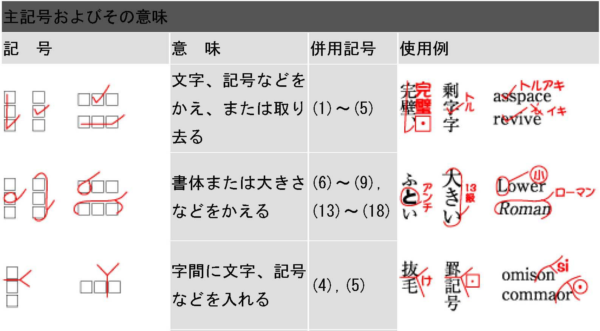
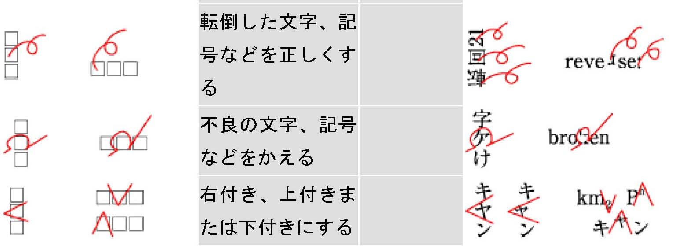
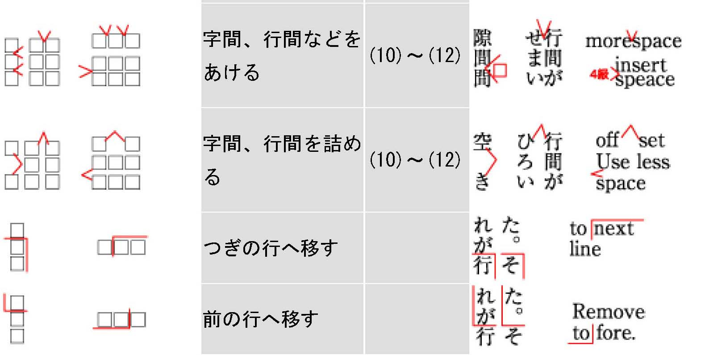
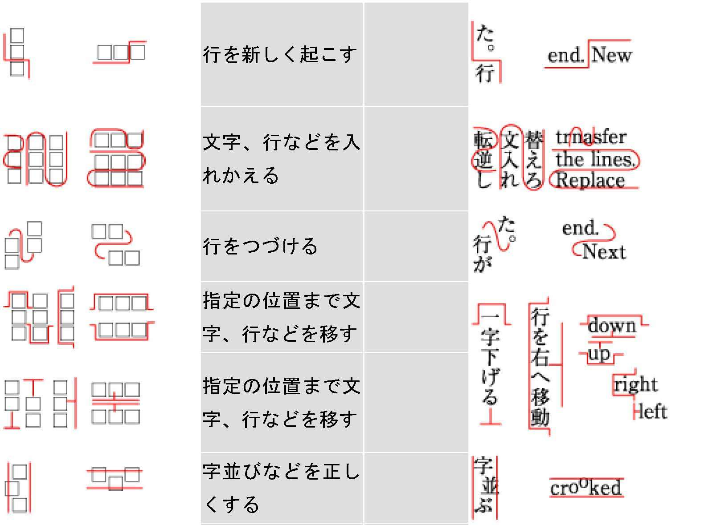
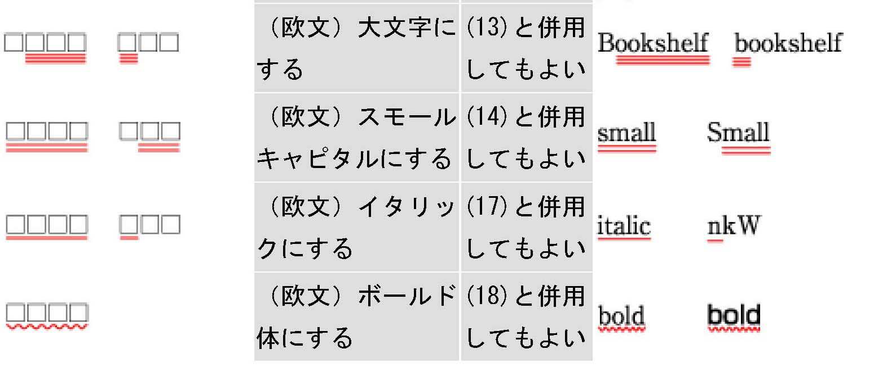
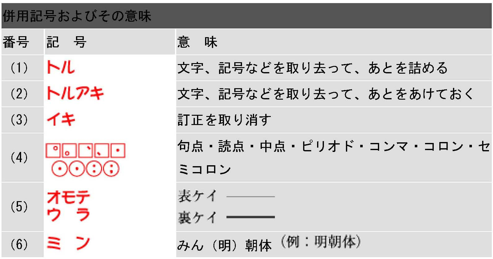
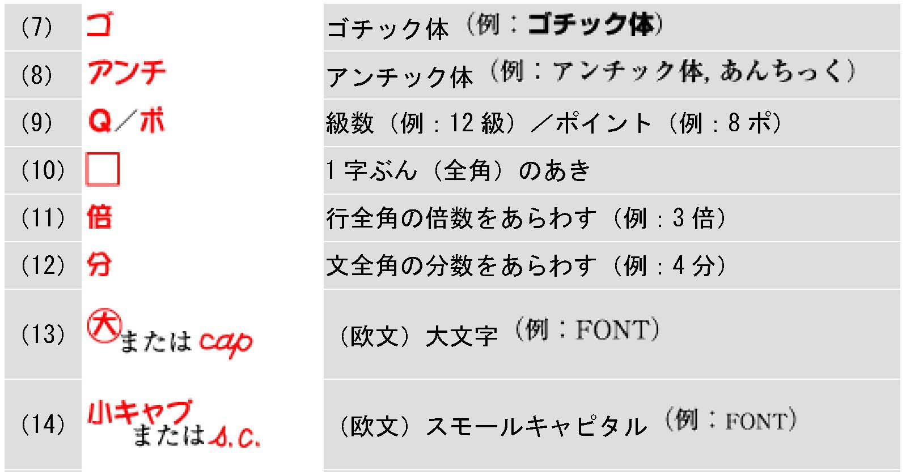
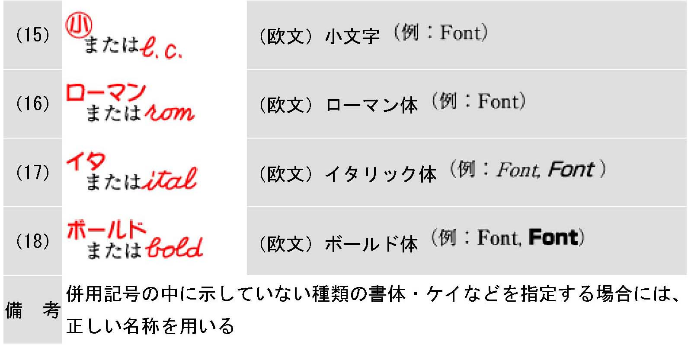
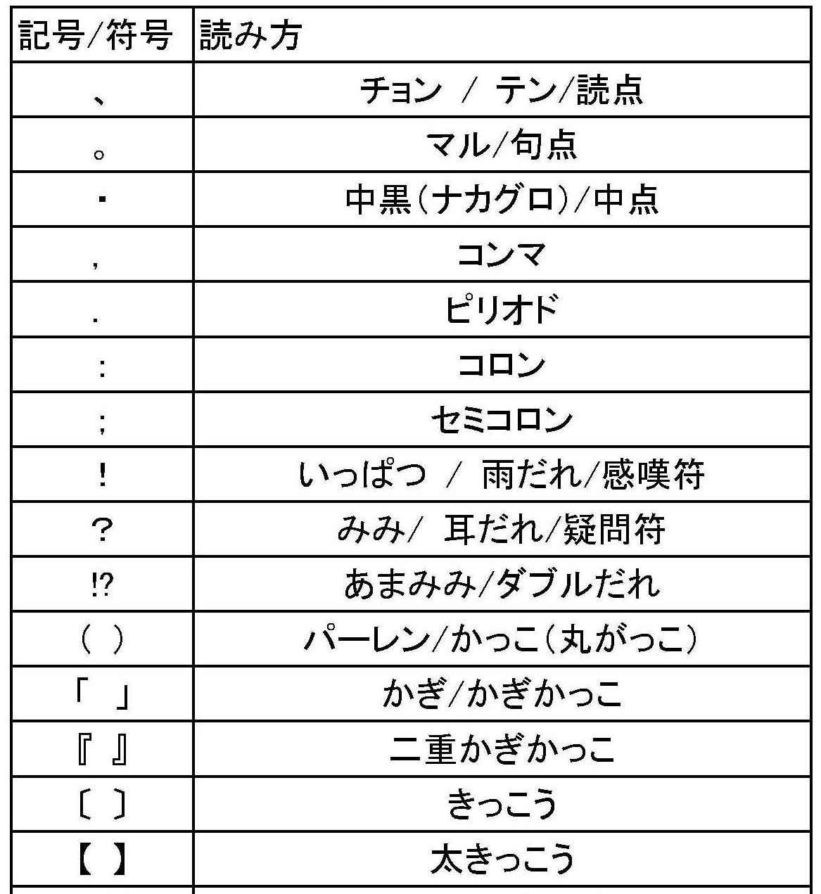
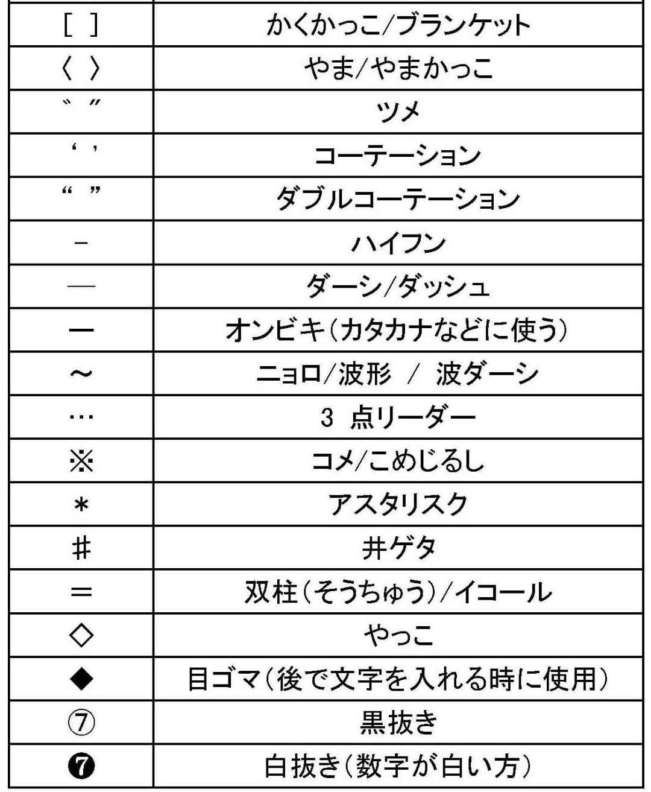

| Web編集者のための校正・校閲の教科書（ポイントとノウハウ） | |
| GEN | |
| (2018) | |
校正が自社にどのように寄与しているか売上の方程式から考えてみましょう。
売上＝①
客数（クライアント）×②
（客）単価×③
頻度
校正が寄与するところ
②
（客）単価＝本数×（1本）単価
校正は主に単価アップに寄与します。正確で間違いのない記事を出すことで、アフィリエイトサイトやSEO会社や編集力の低い他社と差別化が図れ、高い価格をクライアントに請求できるわけです。校正のクオリティーを高めることで、自社のブランド価値が向上し、クライアントのブランドにもいい影響を及ぼします。そして、それが本数にも波及していくのが理想なわけです。もちろん高単価設定は、校正だけでなく企画やライターへのディレクションにもかかっています。いや、むしろこちらの方が重要かもしれません。ですが、校正を疎かにするとその前段階がすべて無になってしまう危険性をはらんでいます。だから、校正は必要なさそうで必要な仕事なのです。
③
頻度 単発案件→継続案件
本数とともに、クライアント満足が得られればお試しのつもりだった単発案件が継続案件になるかもしれません。そして、長期案件になればさらにいいわけです。クオリティーの向上に校正がどれだけ必要かお分かりになりましたでしょうか？
それでは、もう少し詳しく校正について考察していきましょう。編集における校正の役割とは、商品である文章をできるだけ完璧にする仕事です。もしあなたが買い物をした時にその商品が不完全だったらあなたはどう思うでしょうか？そのことを考えれば、校正の重要性は分かると思います。文章の内容がいいかどうかは別にして、最低限文章がきちっとしていないと商品にならないわけです。これが機能しないとクライアントからクレームが出て最悪な場合、取引停止になります。自社サイトの場合は信用度が下がります。校正がきちんと機能していると商品のクオリティーが上がり他社との差別化が図れます。結果、クライアントと自社の両方にバリューをもたらします。そしてこのことが上手くいくと単発案件が継続案件にかわったり、契約が長期化したり、１本単価の上昇が望めます。自社サイトの場合は内容との兼ね合いはあるものの信用度がアップします。校正の仕事は、クオリティーを上げ、信用度を高め、他社や他サイトとの差別化を図る仕事だと思ってください。
校正と校閲は実は同義で語られることもあります。実際、校正をお願い、という時に事実関係もしっかり調べてね、という意味合いが含まれていることもあります。校正という言葉の中に校閲の意味が含まれることがあると覚えておいてください。ただ、便宜上使い分けるとするならば、
「校正は、『てにをは』や同音異義語などの誤字脱字や句読点や記号・符号などの間違いを直す仕事」
「校閲は、上記の内容に加え、原稿の内容に踏み込み、事実関係までしっかり調べる仕事」
ということになります。
注意：上記の校正・校閲の概念はWeb編集者向けのものです。また、上述のような「校正」を「素読み（すよみ）」と言います。いわゆる紙媒体での「校正」は「引き合わせ」といい「原稿と校正刷り（ゲラ）を照らし合わせて、誤りや不備などを正すこと」をいいます。Web編集では、手書きの原稿や印刷物が必要ないため引き合わせ校正は必要ありません。昔は「引き合わせ」が校正の主部を占めていましたが、現在は「素読み」が大部を占めています。
専門者校正は原則、ゲラ（文章）の中だけで文字と格闘します。なので、内容がないようという時でも、言葉の修正や事実関係や論理性が合っていれば、それ以上のことは基本しません。専門の校正者は編集権がないということもあります。編集権がないということは、リライトもできません。しかし、編集者の校正はそれではいけません。編集者は専門の校正者がすることに加え、内容の良し悪しまで踏み込んで校正をしなければなりません。つまり全体の構成も重視するということです。まずは内容がクライアントの指示に合致しているかをチェックする。さらにその内容がクライアントを喜ばせ、読者を喜ばせ、PV率を上げられ、SEO対策になるかまで考えなければいけません。そこまでしないと、契約が打ち切られてしまいます。端的に言えば、いかに顧客を満足させ、お金を出してもらうかということを常に考えながら、文章を読まなければいけないということです。編集者は、編集権（文章を加筆修正したり、リライトしたりする権利）をもっているので、署名記事でない限り、文章を良くするのは当然の仕事なわけです。もちろん、署名記事でもおかしい所はライターに問い合わせて変更の相談をした方がいいですが。編集者の校正は誤字脱字などの日本語の問題と内容の吟味という２つの視点で校正をしなければならないということです。また校正専門者は校正を受動的にするのに対して、編集者は能動的に校正をしなければならないとも言えるわけです。
校正に一番大切なことは何かと聞かれたら、それは集中力です。これが本当に大切です。一番大切なのは日本語力でしょ？と思われる方もいるかもしれませんが、実は違うのです。日本語能力が高くても集中力がない人は、はっきり言って校正には向きません。校正は1000個の赤字を見つけても、１個見落としたらそこを指摘され全ての仕事を否定されます。そういう仕事なので気が抜けないわけです。なので、集中力を高める工夫が必要になってきます。具体的には、睡眠時間はしっかりとる、昼ご飯を食べすぎない（特に、炭水化物と肉類は眠気を誘う）、疲労度が少ない朝にやるなどです。（人間が眠くなるのは午後2～4時みたいです）このことからも、昼食後や一日の業務の終わりに校正をするのはできるだけ避けましょう。
次に必要なのが几帳面さや真面目さや責任感です。大雑把な人は正直、校正には向きません。細かいことまで気を配れる人がやはり向きます。また自分が最後だという意識、つまり責任感をもてるかどうかということも大切なポイントです。全てを疑ってかかる、神経質ぐらいの方がいいのです。例えば、句読点のダブりや抜けまできちんと見るのは、結構神経を使います。また、ちょっとでも怪しい言葉があったら、すぐ辞書をひくなどの行為は、できる人はできるし、できない人はできません。面倒くさがらずに調べるといった能力も必要なのです。もっと言えば校正者は時間が膨大にあるならば全ての言葉を辞書で確認していきたいぐらいです。もちろん、そんなことは無理なのですが、理想論はそうなのです。赤字の発生事由は何が一番だと思いますか？それは「思い込み」です。これを知っている、分っているという「思い込み」が危険なのです。実は自分が得意だと思っている分野ほど調べないので「思い込み」で間違えてしまうのです。自信過少で全部が間違えに見えて不安でしようがないというのもダメですが、自信過剰で調べなくても大丈夫と思うのも傲慢です。面倒くさがらずに怪しいと思ったら調べる、確認するという態度こそが、校正には必要なのです。
最後は、日本語の問題です。まず、校正者適性の前提条件として、言語、言葉（日本語）が好きか、活字が好きか、長時間文章を読んでいても苦にならないかなどが挙げられます。これらが根本にないと、校正は苦行です。日本語リテラシーは、一朝一夕には身に付きません。どれだけ今までの人生で日本語に触れてきたか、本を読んできたかが問われます。例えば、「てにをは」などは国文法で説明することもできるでしょうが、多くの人は経験から「てにをは」を直します。経験とは、いわゆる言語感覚（センス）と言われるものです。これも過去の読書量や国語の勉強によるところが大きいような気がします。また、校正は常識力も問われます。実は狭く深くよりも広く浅く、そして専門を2～3個持っていることがよいのです。これは教養的なことも含め、雑学的なものをどれだけ知っているかによると思います。これらを身に付けるためには多くのものに触れるしかないと思います。本を読む、（本も小説だけでなく、新書だったり、ビジネス書だったり、古典文学だったり、哲学書だったり、ジャンルを問わず読むことが大切）、新聞を読む、雑誌を読む、漫画を読む、広告を読む、映画を観る、ドラマを観る、音楽を聴く、人と話すなど言葉に関するものに興味をもって接することが大切です。
コラム：なぜ新聞記者の文章はうまくまとまっているのか？
新聞記者の文章はなぜ読みやすいのでしょうか？WEBライターとの大きな差異はどこにあるのでしょうか？新聞社の校閲で働いていた時、新人記者の文章もチェックしていましたが、最初は驚くほど下手なのです。もちろん、一流大学を卒業し、狭き門をくぐり抜けてきた精鋭なので頭はいいはずなのですが、文章はお世辞にもうまいとはいえませんでした。ですが、半年もすると段々文章がこなれてきて先輩たちのようなしっかりとした文章になってきます。私が考えるに２つのポイントがあると思います。１つは文章の書きかたのルールが身についたこと。例えば、５Ｗ１Ｈをしっかり盛り込み重要な情報は前から書いていくなどのルールです。新聞はデスクや整理（見出しを付けたり、写真を選んだりし、紙面を作る人達のこと）がどの記事を紙面に入れるか決めます。その際に記者が書いた文章が長すぎる場合、文章の後半を切ったりします。文字数の制限がある以上短くせざるをえないのです。なので、重要な情報を後半にもっていくと整理の人が困ってしまうのです。もう一つは、ベテランの先輩の指導を１対１で受けているということ。WEBライターとの大きな違いはここにあるでしょう。優秀な先輩が最初はつきっきりで指導し、何度もダメ出しをし、書き直させるのでいやでも上手くなるのです。ライターはこの様な機会が極端に少ないのではないでしょうか？文章の書き方の原則から、構成法、てにをはまで教えてもらえる人ともらえない人の差はいわずもがなでしょう。これは、校正にもいえて私の経験からも一番身になったのは、仕事ができる校正の社員から直接指導を受けたことです。閑話休題。文章の切り口が面白い、キャッチーであるということ以上にまずは文章がきちっと書けることが必須ではないでしょうか？
固有名詞、数字（単位）、事実関係の3つ、そして全体の整合性（論理性）のチェックをすることが特に校正では重要です。
固有名詞は、人名、地名「建物も含む」、肩書、組織名、法律名、本・漫画・映画などの題名・タイトル、商品名の7つに注意する。
人名
人名は「ありのまま」が原則。勝手に変えない。略字にしない。旧字は常用漢字に変更しても可。ただし、公式ホームページなどで本人が旧字で表記しているときは旧字のまま書く。また、芸名などは特に注意。
例 モーニング娘。 藤岡弘、など。
人名注意リスト（下は校閲読み）
あべ（安倍、安部、阿部、阿倍）いとう（伊藤、伊東）おおた（太田、大田）
（あんばい、あんぶ、あべ、あばい）（いとう、いひがし）（ふとだ、おおた）
きくち（菊池、菊地）さいとう（斎藤、斉藤、齋藤、齊藤）
（きくいけ、きくじめん）（難しいさいとう、簡単さいとう、旧漢字～）
わたなべ（渡辺、渡部、渡邊、渡邉）ほんだ（本田、本多）
（わたへん、わたぶ、旧漢字～）（ほんたんぼ、ほんおおいすくないのおおい）
渕と淵 崎か﨑 坂と阪 郎と朗 陵と稜 沢と澤 佑と祐と裕 館と舘
（簡単ぶち、難しいぶち）（おおさき、たちざき）（つちへんざか、おおさかのさか）（やろうのろう、ほがらか）（こざとりょう、のぎりょう）（簡単さわ、難しいさわ）（にんべんみぎ、ねみぎ、ねたに）（しょくだて、しゃだて）
荻と萩（荻原と萩原） 竜と龍 季と希 栗と粟 条と條
（おぎ、はぎ）（簡単りゅう、難しいりゅう）（季節のき、希望のき）（くり、あわ）（簡単じょう、難しいじょう）
建と健 管と菅 俊と駿と峻 鳥と烏 爪と瓜
（建設のけん、健康のけん）（たけかんむりかん、くさかんむりかん）
（にんべんしゅん、うましゅん、やましゅん）（とり、からす）（つめ、うり）
クイズ：サッカーのほんだけいすけ選手はどう書く？
本多圭祐 本多圭佑 本多敬祐 本田圭祐 本田圭佑 本田敬祐
あべ総理は？ 阿部総理 阿倍総理 安倍総理 安部総理
はしもと大阪市長は？ 橋元大阪市長 橋本大阪市長 橋下大阪市長
地名
地名は必ずネットで調べる。例えば、おおた区は大田区なのか太田区なのか（正解は大田区）、自己の記憶で判断せず必ず調べる。また、地名と駅名が違う場合もあるので要注意。例えば、地名：阿佐谷 駅名：阿佐ヶ谷、地名：霞が関 駅名：霞ヶ関など。
肩書
肩書は本人の公式ホームページなどで確認。わからない時はウィキなどを参考にする。本人に聞けるときは肩書をどうするか聞く。
組織名
組織名は必ず公式ホームページで確認する。大きな組織なら必ずあるはず。
勝手に省略せずホームページ通りに記載する。また「思い込み」を排除し、必ず確認する。例 キャノン→キヤノン 富士フィルム→富士フイルム
クイズ：牛丼のよしのや・すきや・まつやの「や」は？
吉野屋 吉野家 すき屋 すき家 松屋 松家
法律名
法律名は必ず１次情報を確認。略称なども要確認。最低限ウィキで調べる。
題名・タイトル
本・漫画・映画などの題名は出版社や配給元で確認。本・漫画はアマゾンでも可。本・漫画などのタイトルは非常に特殊なので「思い込み」厳禁。例えば、タイトルにつくるやかなえるなどの言葉があった時、「つくる」「かなえる」なのか「作る」「叶える」なのかを、混同していることが多々あるので、タイトル通りに「ありのまま」記載する。事実は事実のまま、「ありのまま」転写する。勝手に変えてはダメ、絶対！
商品名
商品名は製造元または販売元の公式ホームページを必ずチェックする。そしてそこに記載されているままの表記で書く。勝手に変更しない。日付や量や価格などの数字や単位にも要注意。例えば、何日に発売なのか、量は、ＬなのかMLなのか、価格は税込みか税抜きかなど細かい所も要チェック。
数字は、日付（西暦、月）、お金、年齢、単位などに注意する。
数字は必ず一次情報でチェック。（具体的に言うと、政府が出している統計数字や企業が出している公式な数値など）
計算できるものは必ず計算する。特に、合計の数やパーセントなどに注意。パーセントなどは100％
になるか計算する。
3つのポイントなどの見出しがあった時は、必ず3つあるかチェックする。桁数が多い時は特に注意する。箇条書きなどで数字を使用する時は、順序（数字の大小）に注意。
洋数字と漢数字の使い分け
数字は原則、洋数字。原則、半角で書きます。余談ですが、英語も半角で書くのが基本です。また、洋数字は数えられるものに使います。
漢数字は熟語、慣用句、四字熟語など一般的に漢数字を使うものだけに使用します。また、数えることができないものも漢数字。例えば、「ただ一人の」など。
日付
日付は、カレンダー、時計で必ずチェックする。日付は必ず一次情報などでチェックする。西暦と和暦は必ず統一すること。年と年度の区別は要チェック。特に「月」は31日まである月かチェック。（西向く侍は30日→２、４、６、９、11。ただし2月は28日まで）
週末（今週）、月末（今月）、年末年始も要注意。（年、月、日、時を「またぐ」時や校正日と掲載日が違う時は特に気をつけてください）
改行の時は特に注意。（ゼロの数に注目！）
「3日から5日まで」または「3～5日」と原則書く。
「3日～5日まで」「３から5日」とは書かない。
また8月3日から15日までの時は、最初だけ月を入れる。だが、月をまたぐ時は、月を必ず入れる。例えば、8月3日から9月3日までと。
お金
お金は、基本的に万以下は洋数字で表記。十、百、千は原則、使わない。
例3万8000円 （ただし、ジャスト千円などの場合は除く）
3万8,000円とは書かない。コンマは38,000円のように数値だけの場合に使う。
また、いくらからいくらまでの表記は注意が必要。例えば、300万円から700万円と書きたい時に、300～700万円と書いてはいけない。これだと、300円から700万円になってしまう。必ず300万～700万円と書く。300万円～700万円もダメ。この場合、「円」は除く。
20億円５千万円など円のダブりや、1億5千万円が1億5千円になっていることもあるので注意する。
「から」と「～」の考え方
「から」はただの助詞で、「～」は前後をつなぐ記号と考えるとよいと思います。
具体例で示すと、「3日から5日まで」は、「3日」から「5日」が分離しているのに対して、「3～5日」は、「3～5」を一つの塊と考え、そのあとに単位をつけると考えるといいと思います。同様に、「300万円から700万円」も「300万円」と「700万円」が分離しているのに対して、「300万～700万円」は「300万～700万」が一つの塊と考えるとよいでしょう。
年齢
年齢は肩書や敬称の後に書く。年齢は公式ホームページやウィキなどで必ず調べる。基本的に「○○さん（27）」などと書く。また才は使わず、「歳」を使う。
生年月日は、1973年（昭48）などと書く。1973年（昭48年）とは書かない
また、死亡時は、享年88などと書く。享年88歳とは書かない。
また、「としをかさねる」「としをとる」「としそうおう」などと書く場合は、「年」を使うことが多い。「歳」でもいいが基本は「年」。（「年を重ねる」「年を取る」「年相応」）
単位
単位は、必要なものには必ずつける。正しい単位をつける。MLとLなど。
身長は、原則、1㍍77または177㌢のように書く。１㍍77㌢とは書かない。
分数は、原則、3分の１のように書く。1/3とは書かないが、レシピなどでは可。
人数は、原則「人」を使う。名は使わない。「何人」、「数人」を使い、何名、数名は使わない。ただし、クライアントから「名」を使うように指示された場合はその指示に従う。また、文脈上「名」の方がいい時は「名」でも可。
必ず1次情報（公式サイトや新聞や雑誌など）で確認する。とにかく、時間の許す限り、調べられるものは調べる。面倒くさがらずに、こまめに調べ、確認する。特に、知っているもの、得意なものは「思い込み」が発生しやすいので要注意。
クイズ：JR東海のCMの名コピーで正しいものはどれ？
そうだ 京都に、いこう。そうだ 京都に 行こう そうだ 京都に、行こう。
そうだ 京都、いこう。 そうだ 京都 行こう そうだ 京都、行こう。
この様な超有名で誰でも一度は聞いたことがあるCMでも、正解するのは意外に難しい。「思い込み」を排除して調べることの必要性を再認識してくれたでしょうか？
コラム：意外に重要!? 校正に必要な調べる力（リサーチ力）
校正、校閲に大切なものは上記に述べた通りですが、もう一つ大切なものがあります。それは、調べる力（リサーチ力）です。校正をする際、誤字脱字を見つけるのと同様に大切なのが事実関係の確認です。昔と違い、事実関係を調べるのはネットが登場して以降、格段に楽になりました。重たい百科事典や辞書、資料などをひっくり返さなくてもネットでググればすぐに情報が手に入ります。
しかし、ググれば本当にすぐに正しい情報を得ることができるのでしょうか？小生が校正業務をやってきて感じるのはググるのにも一定のリテラシーが必要だということ。校正に慣れてない人が校正ぽいことをしているのを見ると、なんでこのようなサイトを見ているんだろうと不思議に思うことが多々あります。
素人がまとめたようなサイトやアフィリエイトサイトなどで確認しているのを見て、びっくりしたことが何度もあります。情報はできるだけ１次情報から確認していくことが原則です。また、多くの資料を瞬時に理解し、斜め読みする技術も必要です。目次がない資料を読むときなどキーワードを意識して該当箇所を探します。そして、該当箇所を深く読んで原稿の内容と一致するか確認します。このような作業に慣れていないと膨大な時間が浪費されます。たかがネット検索、されどネット検索なのです。大量の情報をさばく技術も校正者には必要です。大量の情報を要約する力（何が言いたいのかを見抜く力）、大量の情報から必要な情報を抽出する力。時間の制約がある以上、スピーディーに情報を処理する能力も大切なのです。
文章全体に整合性があるかチェックする。言葉（表記）や写真（画像）や表などに統一性があるかチェックする。また、論理的に文章が構成されているかも確認する。その際に、見出しなどが文章の要約になっているかも考える。さらに、文章があまりに常識から逸脱していないかもあわせてチェックする。
言葉（表記）
言葉のゆれがないかチェックする。例えば、「こと」と「事」、「ような」と「様な」や「子供」と「子ども」など。これらを文章内で統一する。
写真（画像）・表
文章と写真（画像）の関係性も必ずチェックする。人物と写真は合っているか？なども確認する。表と文章の数字は合っているかなども同様である。
論理性
文の前後に論理矛盾がないか、論理破綻がないかをチェックする。また、文章を丁寧にしっかり読んで論理構造を理解する。特に逆接の接続詞に注目！
主語と述部がしっかりと論理的につながっているか確認。主語と述部の関係がねじれていたり、矛盾していたりする時がよくあるので注意。
見出し
見出しと本文の整合性をチェックする。見出し語句と本文語句が合っているかを確認。特に固有名詞と数字は同じにする。また、見出しは文章の要約になっているか注意する。いくらキャッチーな見出しでも、本文の要約になっていなかったらダメである。そして、大見出しは、小見出しのさらなる要約になっているか確認する。大見出しは全ての文章の要約である。見出しの間違いは目立つので必ず確認する。見出しには、マル（。）をつけないことも大切。複文の時は途中にマル（。）を付けてもOK。だが、見出しは基本、単文（一文）で書くとよい。ごちゃごちゃ書くのは言いたいことが明確ではないことの証左。単文ならマルを使う必要もないし、要旨が明瞭で読みやすくキャッチーになる。また、赤字は見出しなどの大きなものから処理するべき。目立つところに赤字があると非常に恥ずかしいし、作品の価値も半減してしまう。大きな箇所の赤字は致命的と認識しよう！
常識の逸脱
常識の逸脱がないか確認する。例えば、夏なのに冬物、登場人物が違う人に変わっている、時系列がおかしいなどがある。必ず常識に照らし合わせて考えてみる。この前もこんな文章があった。「秋の足跡が聞こえてきた」と。常識から考えて足跡は音がしない。なので、この場合は「秋の足音が聞こえてきた」だろう。
論理性について問題を解いて考えてみよう。
見出し 死傷者１９人の大災害
本文 台風の影響により死者12人、負傷者8人の被害がでた。
解答 死傷者は死者と負傷者の合算なので12＋8で20人が正解。
もう一問考えてみよう。この見出しは正しいだろうか？
見出し なべさんは亮子が好き
本文 なべさんは亮子が好き。（中略）しかし、一番好きなのは恵美である。
解答 もちろんバツである。日本語は最後に論理構造が逆転することがあるので注意。よく読まないと、なべさんは亮子が好き！という見出しをつけてしまう。その文章のKEYは何かをしっかり読みとくこと。本文の最初の部分だけで判断しないこと。逆接の接続詞に注目するとよい。
文章をミクロ（単語）からマクロ（全文の内容）で見るために必要なこと。
単語力（言葉の意味の理解と適用、言い換え力、言葉のつながり）
漢字が書ける（葡萄、薔薇など）よりも言葉の意味を正しく理解していることと文章内で正しく適用、運用できることが何よりも大切。また、難しい単語を分かりやすい言葉に言い換えるために同意表現を知っているとよい。また、言葉のつながり（言葉と言葉の親和性）を知っておくといい文章が書ける。
構文力（主語と述語の把握）
一文（単文）を書くには主語・述語関係をしっかりさせないといけない。構文は日本語でも英文解釈で使う五文型を使うと分かりやすい。S（主語）、V（動詞）、O（目的語）などを文章に適用して考えてみるとよい。
文章要約力（キーワード、見出し）
文章を正しく理解していないと見出しはつけられない。
読解力（文脈力）
意外かもしれないが、ライターにもこの能力は大切。良い文章、素晴らしい文章、面白い切り口の文章を書くには才能を要しますが、正しい文章、間違いが少ない文章は読解力がある人ならそれほど苦労せずに書けるはずです。
同音異義語や仮名交じり語を見たら、間違いだと疑ってください。また、仮名交じり語は熟語にして考えるのが基本です。
同音異義語・仮名交じり語チェックリスト
ワースト３
つとめる（務める、努める、勤める）
務めるは「任務」、努めるは「努力」、勤めるは「勤務」。
例文：編集長を務める。完成に努める。エスタイルに勤める。
のぞむ（望む、臨む）
望むは「希望」、臨むは「～に面する」。
例文：年収アップを望む。採用面接に臨む。
たずねる（尋ねる、訪ねる）
尋ねるは「問う（尋問）」、訪ねるは「訪問」。
例文：エスタイルに行く道を尋ね、エスタイルを訪ねる。
その他重要語（ワンポイントアドバイス）
やぶれる（敗れる、破れる）かねつ（加熱、過熱）きょうい（脅威、驚異）
景気が過熱する。（よく加熱になっている）脅威は「威力」、驚異は「驚き」。
てきせい（適正、適性）ひっし（必死、必至）はじめて（初めて、始めて）
初めては「最初」、始めて「スタート」。
こたえる（答える、応える、堪える）あける（開ける、空ける、明ける）
答えるは「返答」、応えるは「応じる」。
あつい（熱い、暑い、厚い）かえる（変える、替える、換える、代える）
替えるは「別のもの、新しいもの」、換えるは「交換、換金」、代えるは「交代」。
だい（台、代）いがい（意外、以外）いぎ（意義、異議、異義）
台は「お金、数量」、代は「年代、年齢」。
えいせい（衛星、衛生）きねん（記念、祈念）もと（元、下、基）
あなたの元へ今すぐ行きたい。編集長の下で働く。統計数字を基にプレゼン。
とる（取る、摂る、獲る、撮る、採る、捕る、執る）かいとう（解答、回答）
クイズや試験などは「解答」、質問などには「回答」。
あげる（上げる、挙げる、揚げる）しじ（指示、支持）ほけん（保険、保健）
保健所などは「保健」、その他は多くは「保険」（保険会社、健康保険証など）。
○○し（○○紙、○○誌）ほしょう（保障、保証、補償）まわり（回り、周り）
紙は「新聞」、誌は「雑誌」。 回りは「一般的」、周りは「周囲、周辺」
池の周りを回る。（注：首回り、胴回り、腰回りなどは「回り」を使う）
たいしょう（対象、対照、対称）しゅうせい（修正、修整）
修整は「写真」、修正は「文字」。
重ね言葉は有名なところで「馬から落馬する→馬から落ちる、落馬する」「腹痛でおなかが痛い→腹痛がする、おなかが痛い」「英語で英会話をする→英語で会話する、英会話をする」「後で後悔する→後で悔いる、後悔する」「もう一度考え直す→もう一度考える、考え直す」「よく熟考する→よく考える、熟考する」「無痛で痛くない→無痛である、痛くない」などがあります。重ね言葉はただ丸暗記してもあまり意味がありません。どこが重なりなのかを自分で考えて、納得しながら進めないとパターン以外の重なり言葉が来たら対処できません。以下のリストを自分で考えながら解いてみてください。
重ね言葉リスト
あとで後悔する→
一番最初→
一番ベスト→
今の現状→
後ろにバックする→
断トツのトップに→
まず第一に→
過半数を超える→
ぐっすり熟睡する→
古来から→
コラム欄→
従来から→
第一回目→
まだ未定→
毎月ごと→
約一年ほど→
およそ一年ぐらい→
よりベター→
２度目の再トライ→
子どもの育児→
炎天下の下→
旅行に行く→
「てにをは」に強くなるには、多読して言語感覚を磨くしかないと思います。
カタカナは意外に抜けや濁点に注意が必要です。
ただし、カタカナは絶対といえる基準がないので完全な間違いとはいいがたいものもある。例えば、「ファイナンシャル」と「フィナンシャル」など。
正しく、直してみよう。
後ろはバッグ？→
鞄はバック？→
エキシビジョン→
アタッシュケース→
グランド→
ベット→
コミニケーション→
マネージャー→
リラクゼーション→
シミレーション→
アイディア→
送り仮名は文章内で統一します。
言葉の誤用を問題形式で考えていきましょう。
イチ推し→
立ち振る舞い→
年棒→
使用期間→
こちらの方で、よろしかったでしょうか？→
1万円からお預かりします。→
声を荒げる→
すべからく出席→
笑顔がこぼれる→
汚名挽回→
英語は一石二鳥では身に付かない。→
晴天の霹靂→
さわりだけでも→
60歳ぐらいの初老の男性→
父母の兄の叔父→
～とうり→
そおです→
～とゆう→
まじかに迫る→
ちじむ→
話しずらい→
つずく→
きずく→
かたずける→
こんにちわ→
おまちどうさま→
ラ抜き言葉（見れる、来れる、出れる、着れる、寝れるなど）
正しくは（見られる、来られる、出られる、着られる、寝られるなど）
サ入れ言葉（締め切らさせていただきます、読まさせていただきます）
正しくは（締め切らせていただきます、読ませていただきます）
言葉のゆれ（不統一）と統一
「こと」と「事」、「ような」と「様な」、「できる」と「出来る」などがあります。（出来と出来るの使い分けに注意⇒
「できる」はひらがな、「出来」は漢字）
ひらがな表記
基本的に漢字ではなく、ひらがな表記にするもののリストです。
勿論、大抵、殆ど、僅か、随分、色々、沢山、有る、無い、出来る、様々、且つ、中にはなど。
「もちろん、たいてい、ほとんど、わずか、ずいぶん、いろいろ、たくさん、ある、ない、できる、さまざま、かつ、なかには」にする。
句読点のダブりや抜け
読点（、）は改行の時にダブりが発生しやすい。句点（。）は段落の終わりでの抜けが多い。また。!や。?や、。や。、や。。なども多いので注意。
文字のダブりや抜け
文字のダブりや抜けは、同じ文字が連続する時に起きやすい。特に、ひらがなの連続とカタカナと改行時に発生しやすい。
その他のポイント
「 」内は、原則マル（。）を打たない
見出しは、原則マル（。）を打たない（なるべく単文で書く。複文の時は、途中にマルを打つが、最後だけマルを打たない）
箇条書きは、原則マル（。）を打たない（なるべく単文で書く。「～。～」とはなるべくしない。マルの多用は箇条書きの意味が薄れてしまう）
「...」述べた（正しくは「...」と述べた）など、カッコの後も注意が必要。
３カ月間、３カ所などは、カタカナのカで書く。（「か」とは書かない）
オンビキとダーシ（ーと―の違い）
「」と「」は同じ文章内で使わない。「」は外、『』を中で使う。「～『～』～」
校正では、小文字を捨て字という。校閲記号では、「○」と書く。
コラム：記者ハンドブックの使い方と考え方
記者ハンドブックは通信社の一つ、共同通信社が出している簡易的な用語集です。普通の辞書とは違い、意味は書いてありません。言葉の使い分けや常用漢字内での表記の仕方などが載っています。共同通信社から記事や情報を買っているスポーツ紙や地方紙はこのハンドブックを、記事を書く際のルールにしています。（一般紙は各社独自のハンドブックがあります）ただし、これはあくまでも時間に制約がある新聞記者が迷わず文章を書けるようにするためのものであり国語学者が決めた日本語のルールではありません。言葉の書き分けに関してもあくまでもこっちの方が一般的、よく使うなどで線引きをしているので絶対にもう一方が間違っているとは言えないのです。例えば、ハンドブックでは「階段をのぼる」を「上る」にしていますが、「登る」でも間違えとは言い切れません。この様に、あくまで便宜上線引きをしているだけで、言語上の線引きではないということだけは頭の片隅に入れておいてください。ただ、辞書と違い書き分けが書いてあるのはありがたいともいえます。使えるところは使い、自分の言語感覚と違うと思った場合は無視するのも一つの手だと思います。辞書と共にうまく活用していきましょう。
文章を引用する時はごまかさずに必ず引用元（出典）を明記してください。明記するものは、本なら原則は「タイトル」「著者名」「出版年」「出版社名」です。ネットなら省略して「タイトル」「著者名（又はサイト名）」だけでもいいと思います。ただし、この２つは必ず明記してください。また、引用は自説を強化するものなので全部をマルコピ（丸ごとコピー）は不可です。これはただの盗用です。一部分だけ引用することが原則です。また、引用する時は必ず原典から「ありのまま」引用してください。内容を勝手に変えてはいけません。ちなみに、内容の要約は引用ではありません。引用はそのまま書き写すことが大切です。プロでも引用ミスをすることがあります。例えば、「夢がかなう10のこと」という文を引用する時に「ユメが叶う10の事」などにしてしまうなどです。意味や内容は一緒でもこれでは別物になってしまいます。引用は必ず原文のママ、写してください。本やサイトなどはこれでよいのですが注意が必要なのは歌の詞、歌詞です。歌詞は著作権が非常に厳しいのでお金を払わないならば、原則引用は不可と考えてください。ただし、タイトルはOKです。最近JASRAC（ジャスラック）が厳しいのでなるべく歌詞は引用しないようにしましょう。
写真（画像）は肖像権、著作権の問題があります。フリー画像なら問題はありませんが、どっかのサイトから持ってくるときは要注意です。また、文章や写真説明と写真（画像）が一致しているか必ず確認してください。新聞社や通信社でも事件の犯人を一般人と混同して配信し裁判沙汰になっているケースもあります。また、複数いるときは人物紹介の時に、右からなのか左からなのかなど、名前の順番に注意してください。
画像・写真盗用の具体例としてスポニチアネックスの記事を引用してみます。
歌手の伍代夏子（５２）が画像の無断転載を謝罪し、当面、ブログを閉鎖する。１４日午後、所属事務所がブログを更新して発表した。例えば、今年６月７日付のエントリー「タラコのおむすび」（既に削除済み）には、青ネギが入った卵焼きの写真をアップ。伍代は「お弁当作り」とつづったが、これがキッコーマン公式サイトにあるレシピ「ねぎおかか卵焼き」の写真と酷似。ブログの画像が他サイトから転用したものだと指摘された伍代は、この日朝「皆さま、大変お騒がせして申し訳ありません。また、著作者の皆さまには不愉快な思いをさせてしまって誠に申し訳ありませんでした」と謝罪。「お恥ずかしい話、ワタクシは今の今までウェブ上にある画像は自由に使っていいものだと思っておりました。実際、思い道りの写真が撮れなかった時などは、書いた記事のイメージに合った写真をわざわざ探して載せていたのですが...それは、著作者の許可がなければ載せてはいけないことだったのですね。深く反省しております」と釈明した。所属事務所は「昨日ご指摘がこざいました一部写真使用の件ですが、過去のブログをすべて見直し、修正させていただきたく、当分の間ブログを閉鎖させていただくことになりました」としている。
2014年7月14日
最近、多くのまとめサイトが写真の無断盗用をしていると話題になりました。DeNAの「ウェルク（WELQ）」やLINEの「NAVERまとめ」などIT大手でもこの様なことが多々起きています。まだ、大きな法的問題には発展していませんが、今後厳しくなることが予想されますので十分注意してください。
コピペは最近流行りの病気です。上記の引用とも重なりますが、出典先を明記しないのが、まず問題です。また一つの記事を信用して、その通りに書いてしまうのも問題です。何かを文章の参考にするときは、複数のサイトや一次情報や書籍を参考にして書きましょう。また、編集者はコピペリンなどのコピペ防止ソフトを使ってコピペ記事を防ぎましょう。
一次情報とは何か？一次情報とは最初の情報源のことです。たとえば、薬関係の法律なら厚生労働省のホームページや東京都の保健福祉局のホームページがそれにあたります。また、朝日や日経などの新聞社や共同などの通信社の記事なども一次情報になります。商品ならその製造発売元の企業のホームページです。それに対し、個人のブログやアフィリエイトサイトやNAVERまとめなどのキュレーションサイトは一次情報にはなりません。事実関係を調べたりするときは、必ず一次情報で確認してください。また、引用する時も一次情報から引用してください。キュレーションサイトは多分に主観的であり、信用度も低いです。一次情報は、基本的に客観的であり、信用度も高いです。情報のベースは意見ではなく、事実をもとにしてください。
平成26年（2014年）11月25日付で「医薬品、医療機器等の品質、有効性及び安全性の確保等に関する法律（俗称：薬機法）」が施行されました。薬機法（やっきほう）は旧薬事法に該当します。薬機法の範囲は多岐にわたりますが、編集、校正に必要なところは医療、美容、健康に関する記事と広告でしょう。
医療に関する記事は非常に難しく一般のライターにはまず書けないと思ってください。医師を始めとする医療関係者に書いてもらうか、監修をしてもらうことが必須でしょう。医療関係は命にかかわることが多いので書くのが難しいです。また、医師が書く記事は単価が高いのでコスパが非常に悪いです。正直に言えば、医療記事は避けるのがベストです。DeNAの「ウェルク（WELQ）」事件を考えればどれだけリスクが高いか分かると思います。
美容、健康は一般のライターが書いてもいいと思いますが、問題は医療に触れることが多々あることでしょう。例えば、ニキビを治すのは医療行為ですが、美容記事でもニキビの治し方などが書かれていたりします。薬機法では、医薬品や医薬部外品の目的を「疾病の診断、治療」としているのに対し、化粧品の目的は「人体を清潔にし、美化すること」と明確に定義づけています。化粧品に関しては一切治ると謳っていません。健康食品で病気が治ったなどの記事もネットでは多々あります。本来は医療の範囲であるものが美容や健康記事になってしまっています。この点を誤解しているライターが多いので編集者は注意が必要です。ただ、情報記事に関することはまだグレーなことが多く、明確な法的な線引きができていないのが難しいところです。
本当に問題なのは、美容や健康に関する口コミ的な情報記事ではなく、広告に関する記事です。これは薬機法に完全に抵触し逮捕ということがありえますので細心の注意が必要です。ダイレクトな広告記事やアフィリエイトのような商品紹介記事や業者とのタイアップ記事などは薬機法に触れていないか徹底的に調べてください。簡単に言えば、薬機法に違反する商品を紹介したり、関連サイトに誘導したり、URLを付けたりすると捕まる可能性がありますよということです。それぐらい、ただの情報記事と商品を売ろうとする（直接間接問わず）記事には隔たりがあるのです。情報記事でもアウトになる可能性はありますが、広告販売記事は即アウトになることを強く意識してください。
ここでは、法律の条文は抽象的で分かりづらいので、現場で使える薬機法に関する知識を中心に説明していきます。
健康や美容などの記事で「効くと治る」は、原則使ってはいけません。また、効く、治る、の派生語の「効能、効果、治癒、治療、改善」なども使ってはダメです。これらは医療行為や医薬品で使う言葉で、健康食品や化粧品では原則使ってはダメなのです。言い換えとして「○○が効く」のかわりに「○○がよいとされています」などにしてください。また、「○○がよい」などの断定口調も基本的に好ましくありません。
ただ、例外もあります。それは、病気（医学的な病名）かどうかということです。具体例で説明しましょう。「ダイエットに効く」と「高血圧に効く」では何が違うのでしょうか？それは病気かどうかという点です。ダイエットは病気ではありません。それに対し、高血圧は病気であり、医学的な病名です。このことを考えれば、「ガンに効く」「糖尿病に効く」などはアウトだと分かります。また、「ダイエットに効く」などはOKだと分かるでしょう。ただ、「美白に効く」などはグレーゾーンです。実際に特定の健康食品を売る、特定のサイトに誘導する（URLを付ける）などの行為がなければ、これらを文章で使ってもいいと思います。ただし、直接商品を販売するときの文言は厳しくチェックされますので注意が必要です。
以下のサイトが参考になると思いますので添付しておきます。
参照URL 東京都福祉保健局の医薬品等の広告規制について
http://www.fukushihoken.metro.tokyo.jp/kenkou/iyaku/sonota/koukoku/
医者の名前や医者、医師という言葉を使う時も注意が必要です。特に、「医者がオススメしている」「医師が勧める」という表現は不可です。
用法用量などの記載も健康食品では禁止です。例えば「1日3回 朝昼晩 食後に服用」などの書き方は医薬品の表示方法であり健康食品では使えません。「服用」「内服」などの言葉も医薬品以外で使用するのは避けましょう。普通に「お飲みください」「召し上がってください」と言い換えればいいでしょう。
医療行為や医薬品を否定して健康食品を勧めるような文章もダメです。例えば、「医者にかかるより、副作用がない健康食品で病気を治した方がいい」などといった記事です。健康食品や化粧品の方が医薬品よりいいということは法律上、医療上ありえません。
以下に資料を載せましたので参考にしてみてください。
参考資料（薬機法）
一般ライターさんが書いたダメな見本記事です。ほぼ全てアウトですが、特にまずい所を指摘しました。下線部が薬機法に触れる部分です。
意外な睡眠効果あり！ 高血圧に効く 「トマト酢生活」が？
（→高血圧に効くが薬機法違反。トマト酢生活はトクホ「特定保健用食品」であり医薬品ではないので病名表記はアウト。また、病名と商品名の併記もアウト。LIONのホームページには「血圧が高めの方に」と表記してあります。ちなみに、この表記は消費者庁の許可を取ったトクホだから許されます。ただの健康食品ではこのような表記は許されません。）
トマト酢には、間接的に睡眠効果があるそうです。しかし、トマト酢は血圧を下げる効果 の方で知られています。その高血圧の敵は不眠とストレスだそうです。どうやらこの辺りに、トマト酢が良質な睡眠にも効果的 だという理由がありそうですね。（→睡眠効果はちょっと危ない表現。トマト酢は血圧を下げるは完全に薬機法違反表現。血圧を下げるは医薬品での表記方法。）
「トマトが赤くなると医者が青くなる」効果 がトマト酢にある
（→効果という単語と商品名の併記はアウト。）
「健康に強い味方！」という評判のお酢は、料理調味料として昔から知られていますが、最近の健康志向で、ドリンク用の酢やサプリメントが注目されています。お酢は酢酸やアミノ酸を多く含み、美容や疲労回復にとても効果的だといわれています。
お酢には、塩味がするので減塩効果が期待でき、同時に血圧を下げる効果も あります。カルシウムと一緒に摂るとカルシウムの吸収率があがります。さらに疲労回復効果 も期待できます。この健康に役立つ酢の栄養成分は、カルシウム、マグネシウム、カリウム、アラニン、アスパラギン酸、グルタミン酸、GABAです。（→ここには商品名がないが血圧を下げる効果の部分を直した方がよい。例えば、お酢は血圧によいと言われていますなどと表記する。）
中でもトマト酢は、トマトを原料として醸造法によって作られたお酢です。高血圧に効果 のある酢酸を5%含みます。そのため血圧を下げる効果のある カリウムが多く、トマト由来のミネラルや、アスパラギン酸とグルタミン酸という旨み成分、イライラ解消に効果的なGABAも群を抜いて多く含まれているそうです。（→上記と同じ。）
高血圧に効く トマト酢が睡眠に効く理由
（→高血圧に効くが薬機法違反。食品が睡眠に効くもあまりよい表現ではない。）
トマト酢には、血圧を下げる効果 のあるカリウムが米酢やリンゴ酢や黒酢の2倍以上も多く含まれているので、高血圧にはとても効果的 なのだそうです。また、ストレス抑制成分として知られているGABAも多く含まれ、しかも、グルタミン酸やアスパラギン酸という旨み成分も他の酢に比べて非常に多く含まれているので飲みやすいそうです。（→血圧に関しては上記と同じ。抑制成分という言葉も医薬品の薬理作用、作用機序を想起させるので良い表現とはいえない。）
高血圧の原因は、交感神経が興奮して血管が収縮して血圧を上げるホルモンが放出されて血圧が上がるそうです。交感神経を興奮させないために高血圧の対策には、良質な睡眠とストレス解消が大切だそうです。
血圧を下げる効果 のあるトマト酢には、血管拡張効果 があるので、血流改善で冷え解消にも効果があるそうです。同時にGABAで交感神経の興奮を抑え、ストレスを解消させるリラックス効果もあります。睡眠の敵である冷えとイライラを解消してくれるトマト酢には、血圧を下げる効果 と同時に間接的に睡眠効果があるといえるようです。（→血圧に関しては上記と同じ。血管拡張作用は医薬品で使う用語であり食品には使えない。血流改善もあまり適切な表現ではなくアウトになる可能性が高い。）
夕食後の「トマト酢生活」は睡眠に効果的
（→夕食後などの服用のタイミングを指定できるものは医薬品のみである。食品にはこのような指定はできないし、表現も不適である。）
高血圧は遺伝性が高いので、高血圧の家族歴のある人は予防が非常に大切です。LIONから「トマト酢生活」という高血圧の人の血圧を下げる効果が高いドリンクが発売されました。しかもトクホ（特定保健用食品）の商品ですから、国が許可した食品で副作用もありません。（→「トマト酢生活」という高血圧の人の血圧を下げる効果が高いドリンクという表記をしてはダメ。完全に薬機法違反。ダメな見本。また、副作用もありませんという表記がアウト。そもそも食品に副作用という概念はない。副作用は医薬品において使う表現である。）
血圧が正常の人にとっては、高血圧予防と一緒に睡眠効果もアップさせてくれる最適な健康飲料でしょう。睡眠は健康の第一歩です。継続的に毎日飲み続けるほど効果 が出ます。毎日飲むものだから、美味しくなくては続きません。カロリーだって気になりますね。1本12kcalの低カロリーで旨み成分たっぷりのドリンク飲料です。（→高血圧予防という表現がダメ。病名と予防の組み合わせは食品ではできない。飲み続けるほど効果という表現もあまりよくない。）
以上が薬機法の基本的なことですが、あくまでネット編集の主となる情報記事に関することだけしか述べていません。実際に健康食品や化粧品を直接売ったり、タイアップで売ったりするときはもっと細かい知識が必要となりますのでご注意ください。（例えば、化粧品を売るときに使える表現は決まっているなど）
厄介なことはあまりにも法を順守しすぎるとあいまいな表現と幼稚な表現になってしまい情報や商品の本質から離れてしまうことです。法律違反はよくないですが、どこまで許されるのかあいまいなことが一番の問題です。そこで、本当に困ったときは厚生労働省、各都道府県の福祉保健局（東京では東京都福祉保健局）に直接聞いてみてください。東京都福祉保健局に予約して広告を持っていけばチェックしてくれます。ただし、遅いと数カ月待たされますが。
コラム：大手化粧品会社、大手健康食品会社の表記を参考にしよう
薬機法を法的な文章から学ぶのは非常に大変です。実践で使える知識は実際に使用されている表記で学ぶことが一番です。大手化粧品会社や大手健康食品会社のホームページなどを見てみてください。ちなみに中小企業や聞いたこともない会社はダメです。理由は法的な知識を無視して、というより知らないで書いている場合が多いためです。良い例を挙げるならば、資生堂、カネボウ、DHC、FANCLなどの商品説明が参考になるでしょう。
差別用語は同和（エタ、ヒニンなど）、在日（チョンなど）、障害者（めくら、つんぼ、おしなど）に関する言葉が主です。また、慣用句として、「片手落ち」や「気ちがいに刃物」や「バカでもチョンでも」などの言葉には注意しましょう。最近、ヘイトスピーチに世間が敏感になっています。言論の自由は担保される必要がありますが、いたずらに差別用語を振り回すのは得策とは言えません。差別用語はできるだけ使わないか、他の言葉に置き換えましょう。記者ハンドブック（共同通信社）にも差別用語一覧があるので参考にしてください。
基本的に、時間が許せば必ず紙に出して校正してください。小生に限らず、校正の専門家や誤字脱字がブランドの低下に直結する弁護士もこの方法を推しています。やはり、モニタ上ではどうしても目が滑ってしまい見落としが出てきてしまいます。紙は時間がかかるものの正確度は全然違います。特に重要な文章などはできる限り紙で読みましょう。
コラム：紙で読むことの効用と重要性
紙で読むことの重要性について、２つの本の文章を用いて考えてみましょう。
まずは、ベストセラーとなった「伝える力」（池上彰）の文から。
「仕事でメールを送るのはパソコンですから、書いた文章を見直すのは、多くの場合、パソコンの画面上になります。しかし、これでは、見直す作業としては不十分。パソコンで書いた文章を画面上で見直しても、まだ十分には『もう一人の自分』が育っていないのです。画面で二回、三回見直した後でも、プリントアウトをして、印字した紙を読んでみると、単純な誤字を見つけてしまうこともしばしばです。おそらくは画面上で読み返しているのはまだ『書いた自分』であって、プリントアウトした用紙を読むことで初めて『読み手』すなわち『第三者』の視点に立てるからでしょう。あなたも試しに、これまでに送ったメールをプリントアウトして読み返してみてください。気がつくことが多いと思います。（中略）見直す行為は、できるだけプリントアウトをして行なう。特に、重要な報告書や提案書などは、万全を期するために、そうすることをお勧めします。」
池上氏はNHKのアナウンサーのイメージが強いですが元は裏方の社会部の記者でした。なので、ラジオやテレビの原稿を毎日書いていたんですね。そんな中で誤字脱字をいかに減らすか毎日考えてたどり着いたのがプリントアウトして読むということだったのですね。
もう一冊は東大法学部を首席で卒業し財務省に入り、その後弁護士として働いている超勉強ができる山口真由さんの「天才とは努力を続けられる人のことであり、それには方法論がある。」の文章から。
「弁護士の書く文章は、正確であることが何よりも大事です。（中略）その点で、私の文章は『甘い』と、よく言われました。主語と述語の関係が不明確、自分の考えなのか第三者の見解なのか不明確－
そんな指摘を受けるのは毎回のことでした。加えて、私の文章には『タイポ』（＝誤字脱字）が多いという欠点もありました。文章に正確さを欠いていることに比べればダメージは少ないものの、不用意かつ不注意に書いた文章という印象を与え、記載内容自体の信頼性を損ないます。（中略）こうした経験をすることいくたび、ついに、これはなんとかしないといけない、と思うに至りました。まず実践したのは、文章を書いたあとはすぐに送らずに『３回読む』こと。パソコンの画面で３回読めば、誤字脱字はほぼすべて見つかります。書くときは自分の考えだけで書いていますが、読むときにはある程度客観的になるもので、第三者的な見方もできるようになります。そうすると、自分の文章の飛躍や省略にも気づくというものです。さらに、文章を送る前に、パソコンの画面上ではなく、プリントアウトして、読むようにしました。紙にして読むというと、地球環境には悪く、『エコ派』を称する私の母などには怒られそうですが、それでもやはり、紙に打ち出されたものをチェックするほうが確実性は増すものです。これにより、タイプミスはかなり防ぐことができるようになりました。」
頭がよく勉強ができる人でも文章を書くときは間違ってしまう。そして、その対策として３回読む、そしてプリントアウトして読む。池上氏にしても山口氏にしても活躍する場は違っても文章に対するスタンスは一緒なんですね。頭がいい人の方法論を私達も取り入れて誤字脱字を減らし、クオリティーを上げていきましょう。
どうしても紙に印刷して読めない時は、音読すると良いでしょう。周りが気になる場合は小声で読んでみましょう。その際に、音節にしたがってリズムよく読むと良いと思います。例えば、「何々していただきましてありがとうございます」は、「何々して/いただき/まして/ありがとう/ございます」と読みます。ひらがなの連続やカタカナなど、間違えやすいところは特に注意して読んでみてください。「するとともに」や「あったため」や「したため」などがその例です。
本来、校正の仕事は、自分で直したものを反映することはありません。しかし、当社のようなIT企業の場合、自分で反映させなければなりません。その時に、注意したいことは、直した時に赤字が発生しないようにすることです。パソコンの操作時に間違ってしまうことはよくあることです。間違えて余計なボタンを押してしまったり、または消してしまったり...。直すときは細心の注意を払ってください。せっかく直したのに他で赤字を出してしまっては元も子もありません。また、直したところの周辺の文は必ず読み直してください。
ワードの校閲機能は、はっきりいってまだまだ不完全です。ですが、くだらない赤字などは発見してくれる時もあるので、最後に一応、校閲機能を使ってチェックしてみてください。時間がない時などは必須です。
「～したり」「がが」「～んですが」「表現のゆれ」などがワードの校閲機能を使うとよく出てきます。以下、対処法や基準を示したいと思います。
「～したり」
「～したり」はよく出てくるパターンですね。例文で考えてみましょう。
きのう、野球をしたり、サッカーをした。（×）
きのう、野球をしたり、サッカーをしたりした。（○）
確かに「～したり」は連続で使わないといけないのですが、私は許容範囲だと思います。正しく直したい時は、「～したり」の連続で書くか、または以下のようにすると良いでしょう。
きのう、野球をし、サッカーをした。（○）
「たり」をとって書くのも一つの手ですね。
「がが」
次は「がが」問題です。「がが」は、句点で逃げればいいと思います。
私が彼が好きなチャーハンを作った。（×）
私が、彼が好きなチャーハンを作った。（○）
「私が」と「彼が」が連続すると主語が重なって見えてしまう。よって、主語の重なりを回避するために、読点を打つ。読点を打つことにより「私が」が主語になり、「彼が」が意味上の主語になる。この場合、「彼が」を「彼の」にしてもよい。文法的には「私が」がS、「作った」がV、「チャーハン」がOになり、「彼が好きな」がチャーハン（名詞）にかかる形容詞になる。
「～んですが」「～のですが」
これは間違えというより、文語体と口語体の問題でしょう。
「～んですが」は口語体で、カジュアルな文章ならOKでしょう。
「～のですが」は文語体で、かたい文章やきっちり書きたい時に、使うといいでしょう。
「表現のゆれ、文字のゆれ」
これは上記の整合性とも関係があります。「事」と「こと」、「～様な」と「～ような」、「子供」と「子ども」などがあります。これらは基本的にミックスして書かないようにしましょう。小説などは例外ですが、当社のような文章では基本的に統一して書きます。
校正後、校正反映後に編集（リライト）をするときは、打ち間違いに注意！ここで間違えていることが非常に多い！直す時は再チェック！クライアントに提出する前、Webにアップする前に時間の許す限り、もう一度読んでみること！またアップされたものをもう一度読んでみると新鮮な気持ちになり新たな修正箇所に気付くかもしれません。
コンテンツの文章と直接関係がなくてもクライアント、ライターとのやりとりで誤字脱字が多いと自社のレベルが疑われてしまいます。会社の質とはこういった日常業務にどれだけこだわれるかで決まります。コンテンツだけでなく日常業務の文章にもこだわりましょう。
若手編集者（編集歴1～3年）・編集者を目指している方に参考になるであろう話をしてみたいと思います。編集の業務には校正が大なり小なり含まれています。もちろん、大手新聞社や大手出版社は自社内に校正・校閲の専門部署がありますし、外校を使うことも多々あるでしょう。しかし、中小出版社、Web業界では編集者が自身で校正をしなければいけないことが多いです。編集業務は、企画立案からディレクション、進行管理と多岐にわたります。そのようなマルチ業務の中で校正にどれだけ労力をかけられるでしょうか？Webの記事は間違いが多いと言われていますが編集者はどのようにすべきなのでしょうか？残念ながら校正は向き不向きがあるので出来ない人はできません。ですので、得意な人は自分で校正をすればいいですが、そうでない人は他の人に任せるか誰かにチェックしてもらうようにしたらいいと思います。校正ができないから編集者として失格とはなりません。校正は全然ダメだけど、企画やディレクションは素晴らしいという編集者は多々います。もちろん、最初は自分の適性を知るために一生懸命努力してやってみることが必要です。ですが、何度やってもダメと分かったら校正は誰かに任せ、自分の得意分野で勝負する方がいいでしょう。編集は編集でも校正が強い編集者なのか、営業に近いディレクションに長けた編集者なのか、キレキレの凄い企画を考えられる編集者なのか......。自分の強みを早く見つけ、その強みを軸に素晴らしい編集者を目指してください。まずは色々やってみて、その中から自分の適性を見つける。それが編集3年目までのあなたの課題です。「○○に強い編集者の△ △ さん」の称号を獲得すべく努力してみてはいかがでしょうか？
校正をしている時に気になった点をいくつか挙げてみたいと思います。校正を日々やっていると文章の良し悪しがいやでも分かってしまいます。良い文章と悪い文章。一体何が違うのでしょうか？もちろん、文章の面白さ、役立ち度など内容に関することが一番大切なのは言わずもがなでしょう。しかし、それ以外で重要なのは文章のスタイル（構成）ではないでしょうか？Web業界は一つの記事が1000文字から1500文字であることが多いです。ということは、ある程度はパターンがつくれるということでもあります。良い文章はある程度、スタイルが決まっています。昔から文章のスタイルは「起承転結」「序破急」「序論・本論・結論」などパターンが決まっています。作家などはこの様なスタイルを嫌い独自のスタイルを生み出す人もいます。しかし、基本的にWebの記事は、小説やブログなどではない限りパターンがあった方がいいような気がします。ライターの文章を読んでいると非常に散文的で、詩的で、自由スタイルの人が多いです。これがWeb小説だったり、個人ブログなら何ら問題はないと思います。しかし、商業的なビジネスが絡んでくる記事は、あまりに自由度が高すぎると文章のイイタイコト（意図）が不鮮明になり伝わりにくくなります。やはり読み手のことをよく考え、相手が一回読んだだけで理解できるような文章のスタイルを確立する必要があります。まずは、決められた字数内でどのようなスタイル（構成）を確立するか、文章を書く前に決めてみてください。これだけで文章の質がグッと引き締まり良くなるでしょう。
次はもう少しミクロな視点で見ていきたいと思います。一文（マルからマルまで）を書く時に、特に注意して欲しいことは「文章は長くしない」ということです。接続詞や助詞や読点で文章を長くしている例がよくあります。文章が長くても主語述語のねじれがなく文法的にあっている文章もありますが、下手なライターだと文章にねじれがおき構文が破綻してしまうことが多々あります。また、文章が長いと単純に読みづらいということもあります。一文は短く書くことが原則です。また、主語と述語のねじれにも注意してください。
ライティング技術と直接関係はありませんが、テーマ（内容）の理解も非常に大切です。原稿を校正していると文法的に正しいとか切り口が良いとか以前にテーマ（内容）が不鮮明、不明確な場合が多々あります。そのテーマの専門家の場合は、その様なことは少ないのですが、マルチなライターや未熟なライターはテーマについてよく調べないで書いているように見受けられます。時間的制約があるのは分かりますが出来るだけ調べられるものは調べ、内容をしっかり理解してから書くようにしましょう。
上記に関連することですが、固有名詞などは正確に書いてください。ちゃんと調べずにうろ覚えで書いているライターが多すぎます。有名人だから、自分の得意なジャンルだからと手を抜かず必ず調べてから書いてください。正しい情報を発信するのも良いライターの条件です。また、文章を引用する時は必ず一次情報から引用してください。怪しげなサイトや個人ブログやキュレーションサイトなどからの引用は、内容がライトな時などを除き、極力避けましょう。
文章を読んでいると妙に難しい文章に出合います。特に年配のライターや大学を卒業したての新人ライターにこの傾向が見られます。商業的な文章やビジネス関連文書は、内容を落とさず平易に書くことが求められます。大学の論文や小説や批評文などと違い、読める人だけが読めればどう書いてもこっちの自由だろという精神は商業的な文章ではアウトです。一回読んだだけで、誰でもスッと理解できる文書を目指しましょう。
最後に文章を書いたら必ず読み返してください。校正をしていると、しっかり文章を直してあり完璧に近い文章もある一方、一回も全体を読み返していないのではと疑いたくなるほど酷い文章もあります。ライティングは書いたら終わりという発想を捨て、必ず全部読み返して推敲するというクセをつけてください。
まとめ：ライティングにおける7つの注意事項!!
1自分のスタイル〈構成〉をしっかりつくる（型・ひな形・パターン）
2一文を長くしない（接続詞、読点を多用しない）長い時は二つに分ける。
3構文に気をつける（主語と述語のねじれがないかチェックする）
4テーマ〈内容〉についてしっかり理解してから書く（曖昧な知識で書かない）
5正確な情報で文章を書く（うろ覚えで書かない。一次情報から引用する）
6難しく書かず、平易に書く（難単語を使わない。独りよがりな文章にしない）
7書いた文章は必ず最初から全部読み返す（できたら印刷して読んでみる）
ライターの絞り込みと有能ライターの発掘
すべてはライターに始まりライターに終わると思います。もちろん、編集や校正も関係ないわけではありませんがライターの質が良く、文章がうまいと編集業務や校正業務も楽になります。校正の仕事をしていて、もっと文章がうまく、内容もしっかりしていたら楽なのにな～と思うことが多々あります。ライターがしっかりしていると校正者も楽になりますし、編集者もリライトなどの時間が減り、企画や他社との打ち合わせなどもっとクリエーティブなことに時間を割けるでしょう。ぜひ業務の中に有能ライター発掘の時間を設けてみてください。
校正をしていると文章のスタイルがバラバラなのに驚きます。商業的な文というより日記・エッセイのような構成にビックリすることも多々あります。インタビュー記事や広告記事など通常のパターン以外の文章もあるとは思いますが、ライターへのディレクション時にテンプレ（雛型）を提示した方がいいのではないでしょうか？基本スタイルの序論・本論・結論だけでなく、抽象から具体への流れや段落ごとのつながりまで指示しておくと後々楽になるでしょう。数種類のテンプレ（フォーマット）があるとライターさんも書きやすいのではないでしょうか。
校正をしていて、いや校閲をしていて一番困るのは事実関係の出典に関してです。ライターさんがどっから事実を引っ張っているか分からないので校閲者も探すのに非常に苦労します。日本語の問題よりこちらの方でてこずることも。正しい情報を見つけられれば良いのですが、時間があまりない中、検索をするので誤情報や古びた情報を信じて校閲をしてしまうこともよくあります。校正者、校閲者からすると参照サイトなどを添付してもらえるとありがたいのです。もちろん、これは編集者もそうでしょう。最終確認をしたい時に、コピーコンテンツか調べたい時に、参照サイトがあると便利だと思います。ひと手間かかりますが、ライターへのディレクション時にお願いするといいのではないでしょうか？
コラム：アゴラで「Web編集と校正」についての面白い記事を見つけたのでぜひ読んでみてください。
●ネットは編集者を雇うのも大変
まー、確かにブログ論壇界隈では「マスゴミの報道はなっちょらん！」的な既存メディアへの悪口を書く方がＰＶ伸びるんだろうけど、この１年余り、有名なネットメディアのスタッフの皆さん方とも本業や自分の言論活動のことで色々やり取りさせていただいて、業界的な課題が見えてきたことも事実だ。というわけで、ご要望にお応えして早速指摘してみよう。
一番わかりやすいのは、編集スタッフの「校閲力」ですね。そもそもネットメディアの場合、執筆者の投稿をそのまま掲載する媒体もあるけど、編集者が介在しているところ自体が少数派だ。よほど過激な表現を丸く書き直したり、明らかに事実誤認を修正する程度はあっても、大幅に改稿することは稀だ。これは編集スタッフが少数という物理的な理由もあって、大手であるBLOGOS編集部ですらもバイトを含めて数人体制で日々回している。ハフィントンポストも確か８人体制だったはずだが、現場取材の記者等を除くとエディターは２人とかじゃないかな。つまり1つの原稿を面倒みるのに注力できる時間が極めて限られる。文章を大枠で直す編集者ですら、そういうじり貧の体制でやっているのだから、新聞や中堅以上の出版社のように校閲専門のスタッフを置くことは困難になるのは自明の理だ。
●校閲スタッフの凄さ
最近は新聞どころか、雑誌も読まないブログ読者が多いようなので、校閲スタッフの凄さを紹介しておこう。校閲というと、誤字や脱字を探す人という程度の認識しか持っていないかもしれないが、その程度の作業しかやらないのであれば、ワードの「校正」機能といった機械的な対処で済ませばいいし、活字好きで間違い探しの得意なアルバイトの学生や主婦でもやれてしまう。新聞社や老舗出版社で働く「プロ」の校閲記者は違う。漢字検定１級保持といった校正上、必要な知識がずば抜けているだけではなく、リサーチャーとしての能力が現場記者に匹敵する。
※ネットで話題になった新潮社の校閲（石井光太氏twitterより）
もちろん、リサーチと言っても机上でのことに限られるが、文献、過去の記事、ネット上の公開情報等々、身の回りで可能なあらゆる資料を徹底的に当たって確認する。先月、ネット上で新潮社の小説の校閲の凄さが話題になっていたが、あれは小説で描写される日付の実際の月齢と照合していた（詳しくはまとめサイトhttp://matome.naver.jp/odai/2136766411643129901
をご参照）。
●校閲に記者生命を救われた筆者の体験
私自身も新聞社時代、校閲の皆さんには何百回と危いところを助けていたただいた。たとえばスポーツ記事は、数字が頻出するほど説得力を増す。高校野球の記事で「２日の連投にもめげずに好投したエースの田中君」と書くのと、「前日までの２日間で２７６球を投げていたが、それでも田中君は好投した」と言うのでは伝わる重みが違う。それで記者は数字を多用したくなるのだが、甲子園で予選から決勝まで何試合も一人で投げた投手の球数を全部計算し、それも締切の限られたドタバタの中で文章の構成も思案する"片手間"でやるとミスするリスクもある。こういう時、校閲記者は試合の記録を一通り計算して、ちゃんと裏取りする。
事実関係のチェックも半端ではない。あれはいま思い出しても本当に恥ずかしいが、記者４年目のことだったろうか。八王子支局に勤務していたとき、週末の街のイベント記事で、地元のお寺の行事をサクッと取材して原稿を早々に書き上げた。事件も起きそうになく夜勤当番でもなかったので早く帰ろうとしたところ、支局のデスク（原稿を直す人）を務めていた先輩記者に本社の校閲記者から"ご注進"の電話が。何年か前の記事と照合したところ、いま貰った記事にある行事の趣旨が違っているのではないか？というのだ。うひー（汗）。まだ20代の若造で休日出勤でタガが緩んでいたんですね。不幸中の幸い、平日にデスクを務める怖い鬼デスクじゃなかったので優しくたしなめられて、電話で再取材。書き直して事なきを得たが、校閲のスクリーニングの凄さを実感した出来事だった。
●メディア流動化で校閲の運命は？
もちろん、ネットメディアだってリソースに余裕があれば校閲専門のスタッフを配置したいはず。誤字脱字を減らす品質管理だけでなく、オフィスの中でも出来るかぎりの裏取りを経た記事が信頼向上につながり、媒体の価値を上げていくというものだ。先日、ハフィントンポスト発で「アンネの日記」を破られる事件がスクープされたが、ネットメディアの社会的影響力が今後も増すことを考えると、広告収入のアップ等で、そういう校閲スキルの高い編集スタッフを雇えないか真剣に模索する段階のようにも思える。
しかし、その一方で紙媒体でも、校閲スタッフは編集部のなかでも、経費削減の折にはリストラの対象にもなりやすい。新聞社も、地方版はかなり昔の段階で首都圏を除いて専従スタッフは置かなくなり、支局のデスク、記者たちが自力で校閲している（その分、若い記者がいい加減な記事を書いて訂正が増えるリスクは高い）。新聞業界の不況に出口がみえない中、近年は整理・編成部門（レイアウト担当）を分社化するような動きもあって、それなりの待遇に裏付けられた編集責任を持つ校閲スタッフを維持できるか雲行きが怪しくなっている。印刷後に訂正が効かない紙媒体のプレッシャーのもとで鍛えられた校閲人材が、ネット媒体でも登用されるのかどうか。紙、ネットを問わず、記事のクオリティー、媒体の信頼性を占う上で、注目していきたいと思う。
アゴラ 言論プラットフォーム 新田哲史氏「紙とネット、校閲力の差はまだまだ」より
（参照元）http://agora-web.jp/archives/1585320.html
日本工業規格：主記号は単独で用いるものもあるが、併用記号の番号を添えたものは、その番号の記号と組み合わせて用いる








主記号およびその意味
記 号 意 味 併用記号 使用例
文字、記号などをかえ、または取り去る (1)～(5)
書体または大きさなどをかえる (6)～(9),
(13)～(18)
字間に文字、記号などを入れる (4),(5)
転倒した文字、記号などを正しくする
不良の文字、記号などをかえる
右付き、上付きまたは下付きにする
字間、行間などをあける (10)～(12)
字間、行間を詰める (10)～(12)
つぎの行へ移す
前の行へ移す
行を新しく起こす
文字、行などを入れかえる
行をつづける
指定の位置まで文字、行などを移す
指定の位置まで文字、行などを移す
字並びなどを正しくする
（欧文）大文字にする (13)と併用
してもよい
（欧文）スモールキャピタルにする (14)と併用
してもよい
（欧文）イタリックにする (17)と併用
してもよい
（欧文）ボールド体にする (18)と併用
してもよい
併用記号およびその意味
番号 記 号 意 味
（1） 文字、記号などを取り去って、あとを詰める
（2） 文字、記号などを取り去って、あとをあけておく
（3） 訂正を取り消す
（4） 句点・読点・中点・ピリオド・コンマ・コロン・セミコロン
（5）
（6） みん（明）朝体
（7） ゴチック体
（8） アンチック体
（9） 級数（例：12級）／ポイント（例：8ポ）
（10） 1字ぶん（全角）のあき
（11） 行全角の倍数をあらわす（例：3倍）
（12） 文全角の分数をあらわす（例：4分）
（13） （欧文）大文字
（14） （欧文）スモールキャピタル
（15） （欧文）小文字
（16） （欧文）ローマン体
（17） （欧文）イタリック体
（18） （欧文）ボールド体
備 考 併用記号の中に示していない種類の書体・ケイなどを指定する場合には、正しい名称を用いる
「Energy Review Center」のホームページから引用しました。
http://www.erc-books.com/ERC/How/H2-F.html
もっと詳しく知りたい方は「校正記号の使い方―タテ組・ヨコ組・欧文組 日本エディタースクール編」を参考にするといいでしょう。その他、オススメの本は巻末の【校正・校閲をさらに知りたい、究めたい人のためのブックガイド】に書いておきましたので参考にしてください。
Web編集者は校正記号を使って校正をする必要はありません。しかし、何が書いてあるかが分かるレベルにはなっている方がよいでしょう。特に、外部の校正会社を利用する場合、校正記号が分からないと反映ができません。慣れれば難しくないので理解するように努めましょう。


上記が全てではないですが覚えておくとよいものをまとめてみました。また、会社や業界によって読み方が違う場合もあります。
注意する点をいくつか挙げます。まずは、ダーシ（－
）とオンビキ（ー）です。
ダーシは7－
8などの時に使う記号です。
オンビキはラーメンなどのカタカナ言葉をのばす時（長音/長音符）に使います。
次に「ニコール・キッドマン」のように外国人の名前の間に使う記号（・）を「ナカグロ」と言います。
「キーラ・ナイトレイ（イギリスの女優）」と書いてあった場合、（ ）の部分を「パーレン」と言います。
白抜きと黒抜きの違いも知っておくとよいでしょう。白抜きは、黒地に白文字です。
「捨て字」という言葉も知っておくといいでしょう。「捨て字」とは、小文字（捨て仮名、小書き文字）のことを言います。具体的に言うと、「ジゼル・ブンチェン」という言葉の「ェ」の部分を指します。上述の「ニコール・キッドマン」だったら「ッ」の部分ですね。
パソコンで認識できない文字があった場合に表示される「〓」を「ゲタ」と言います。この記号が出てきた時は正しい文字に変換しましょう。
校正で、ひらがなから漢字に直すことを「とじる」と言います。また、逆に漢字からひらがなに直すことを「ひらく」と言います。
パンフレットやチラシなどのイラスト・写真を校正する時に使う技法を「パタパタ」と言います。「パタパタ」とは「新しいゲラと前のゲラを重ね合わせ、内容が合っているかを確認する」ことをいいます。よく間違い探しのイラストがありますよね？間違い探しの問題と解答を重ね合わせ、パタパタさせれば間違いの箇所が瞬時に分かりますね。その要領で校正をするのです。
Web編集に直接関係あるものではないですが編集者として上記のことを知っておくといいかもしれません。
「校正畏るべし」
もとは論語の後生畏るべし。これをもじって、校正を甘く見ていると痛い目に遭いますよ、という警句が生まれました。校正は企画などと違って挽回ができません。一回一回が勝負です。注意を怠らずに文章を読みましょう。
「ひらがなに赤字なし」
上記で述べた仮名交じり語など書き分けが難しいときはひらがなで、という文句。時間がない時やどちらか判別しづらい時はひらがなで。下手に漢字で書いて間違えるよりはマシ。困った時は、「ひらく（ひらがなにする）」のが鉄則。ただ、熟語などは漢字で書かないとおかしくなるので注意が必要。
「赤字のそばに赤字あり」
なぜか昔から赤字のそばには赤字が潜んでいます。同音異義語の赤字を発見したと思ったら隣の固有名詞が違っていた......なんてこともよくある話。きっと先人の経験則でこの言葉が生まれたのでしょう。赤字を見つけたら安堵しないで周りに注意してください。また、Web編集の場合、修正は自分たちでやると思います。修正時に打ち間違えや他の文字を消してしまうことがあるので十分に注意してください。せっかく赤字を見つけて修正したのに、他で赤字を出してしまったら本末転倒です。直したところの前後は必ず再読してください。
「校正者（編集者）は最初の読者」
校正者は、作家やライターや記者などが書いてきた原稿を一般読者より先に読みます。ただ仕事として、業務の一環として読むだけでなく、一読者として読むことが大切です。一般の読者が違和感なく読めるように自分も読者になったつもりで赤字を直せるといいですね。ただ機械的に赤を入れるのではなく常に読者の立場になって校正をしましょう。
「大文字に赤字あり」
タイトルや見出しなど大きな文字の所に赤字が潜んでいることが多いです。サラッと見てしまいがちな箇所だからこそ注意して読むべし。大文字は目立つので何度もチェックしましょう。
１、文章に矛盾や論理破綻や文脈の乱れがないか？
２、誤字脱字がないか？（特に大きな見出しは注意！）
３、句読点やカッコなどの記号・符号のダブり、抜けはないか？
４、数字の間違いはないか？計算できるものは計算したか？
５、固有名詞、数字、事実関係はチェックしたか？
６、引用文などの出典は記載したか？
７、日付関連は大丈夫か？
８、写真（画像）や図や表と本文は合致しているか？
９、フォント（字体とサイズ）は指示または基準通りか？
10、全体の整合性はあるか？表記などは統一されているか？
１、集中してやる。緩急つけて、やるときはやる（だらだらやらない）
２、ゲラを時間が許す限り、繰り返し読む
３、時間を置いて読み返す（修正する時にもう一度サッと読んでみる）
４、できるだけ紙で読む（特に重要な文章や難解な文章の時にオススメ）
５、紙で読めない時はできるだけ音読する（小さな声で言ってみる）
６、ちょっとでも怪しいと思ったら必ず調べる（思い込みが赤字を引き起こす）
７、固有名詞、数字、事実関係は必ず一次情報で確認する
８、引用は必ず原文のママうつす。勝手に変更しない。孫引き（「引用の引用」のこと、例えばキュレーションサイトなど）はしない。引用元（出典）を必ず明記する
９、著作権の侵害には注意。特に歌詞はシバリが多いので引用禁止。写真も肖像権注意。薬機法、差別表現にも注意
10、ワードの校閲機能は不完全ではあるが、くだらない赤字（修正間違えや不要な文字の残り）などは指摘してくれるので最後に必ず使用する
１、文章を読むときは音節ごとに区切って読むと誤字脱字、句読点、言葉のダブり、抜けなどを発見しやすくなる
２、間違いのパターンを覚える。自分の間違いノートを作る
３、数字に強くなる。計算力をあげる。ライターは純文系が多いので、理系脳が役立つ。理系脳といっても、数学ではなく算数の知識で十分
校正の基本（校正記号等の技術的なもの）を学びたい人向け
実例校正教室 日本エディタースクール（校正の基本書）
校正記号の使い方―タテ組・ヨコ組・欧文組 日本エディタースクール
校正練習帳〈1〉校正記号を使ってみよう タテ組編 日本エディタースクール
校正練習帳〈2〉校正記号を使ってみよう ヨコ組編 日本エディタースクール
校正のエッセイを読みたい人向け
増補版 誤植読本 （ちくま文庫) 高橋 輝次
校正のこころ 積極的受け身のすすめ 創元社 大西寿男
校正のレッスン―活字との対話のために 出版メディアパル 大西寿男（校正の考え方も学べる良書）
校正の練習や間違えやすい日本語を学びたい人向け
日本語お稽古帳 毎日新聞社
VOW王国 ニッポンの誤植 宝島社
日本語課外講座 名門校に席をおくな！ 講談社校閲局
朝日新聞校閲センター長が絶対に見逃さない間違えやすい日本語 前田 安正
※「校閲ガール」という本もあるが校閲にはほとんど触れていないエンタメ小説である。タイトルに騙された本。ただし、ドラマ化もされたので超初心者はドラマを見た後（ドラマは結構良い）、校閲の雰囲気を知るために読んでみてもいいかも。
校正をするときに使い勝手がいい辞書
明鏡国語辞典 大修館書店 北原保雄（間違えやすい言葉も載っている）
てにをは辞典 三省堂 小内 一 （言葉と言葉のつながりが分かる辞書。いわゆるコロケーションが載っている辞書。著者も校正者）
重ね言葉リスト
あとで後悔する→あとで悔やむ、後悔する
一番最初→最初、一番初め
一番ベスト→一番、ベスト
今の現状→現状、今の状態
後ろにバックする→バックする、後ろに下がる
断トツのトップに→断トツに、トップに
まず第一に→第一に
過半数を超える→半数を超える、過半数を占める
ぐっすり熟睡する→ぐっすりと眠る、熟睡する
古来から→古来、古くから
コラム欄→コラム（コラムと欄は同義）
従来から→従来、前から
第一回目→第一回、一回目
まだ未定→未定
毎月ごと→毎月、月ごと
約一年ほど→約一年、一年ほど
およそ一年ぐらい→およそ一年、一年ぐらい
よりベター→ベター
２度目の再トライ→２度目のトライ、再トライ
子どもの育児→育児（子どもと児は同義）
炎天下の下→炎天下で（下の重なり）
旅行に行く→旅行をする、旅に出る（旅に行くとはいわない）
カタカナ
カタカナは意外に抜けが多いので注意が必要です。
正しく、直してみよう。
後ろはバッグ？→バック
鞄はバック？→バッグ
エキシビジョン→エキシビション
アタッシュケース→アタシェケース
グランド→グラウンド
ベット→ベッド
コミニケーション→コミュニケーション
マネージャー→マネジャー
リラクゼーション→リラクセーション
シミレーション→シミュレーション
アイディア→アイデア
言葉の間違い（誤用）
言葉の誤用を問題形式で考えていきましょう。
イチ推し→イチ押し（普通に推薦する時は、「推す」でよい）
立ち振る舞い→立ち居振る舞い
年棒→年俸（ねんぽうが正解。ねんぼうは誤読）
使用期間→試用期間
こちらの方で、よろしかったでしょうか？→こちらでよろしいですか？
1万円からお預かりします。→１万円お預かりします。
声を荒げる→声を荒らげる
すべからく出席→すべからく出席すべし（すべて・皆ではなく、当然の意味）
笑顔がこぼれる→笑みがこぼれる
汚名挽回→汚名返上、名誉挽回
英語は一石二鳥では身に付かない。→英語は一朝一夕では身に付かない。
晴天の霹靂→青天の霹靂
さわりだけでも→最初の意味でなく、一番良い所（サビ）
60歳ぐらいの初老の男性→初老は40歳の意味
父母の兄の叔父→父母の弟の叔父（兄は伯父）
～とうり→とおり
そおです→そうです
～とゆう→～という
まじかに迫る→まぢかに迫る
ちじむ→ちぢむ
話しずらい→話しづらい
つずく→つづく
きずく→きづく
かたずける→かたづける
こんにちわ→こんにちは
おまちどうさま→おまちどおさま
お疲れ様でした。単純暗記ではなく、考えながら間違えパターンを覚えていきましょう。
「応用問題」赤字をさがそう。できるかな？
この文章には12個の誤字脱字があります。間違いの箇所を指摘し、正しく直してください。ただし、内容の良し悪しは問わないものとします。
【コラム】知的財産権は誰のモノ？発明者と企業法務の攻防を考える！
特許権は企業法務のアキレス健？
発明した特許は誰のものか、という問題は以前からあった。特許をめぐっては幾度となく裁判が行われてきた。企業法務にも多大な影響を与えてきた特許論争。現在の仕組みは発明をした社員から企業が買い取る制度になっている。そこで特許法を改正して、企業が特許を保有できるよう制度変更するという。来年の通常国会で法改正が実現される可能性もある。社員の発明を商品化する際、相当の対価を発明者に支払うことが特許法で定められている。企業にとってはこれが足かせになり、様々な支障が発生することがしばしばあった。産業界からの厚い要望もあり、条件付きではあるが発明は"企業のモノ"にすることで、経済活動がスムーズに行われることを期待している。しかし、技術者・研究者からの反発が懸念される。
個人のモノ？企業のモノ？
社員と企業の特許論争が裁判に発展したケースとして青色発光ダイオード訴訟が有名だ。当時、日亜化学工業に在席していた村修二氏(現：カリフォルニア大学教授)が、高輝度な青色発光ダイオードを使い製品化に成功した。詳しく述べるとツーフローMOCVD装置の発明により、青色発光ダオードの量産化に成功したことだ。まさにココが世紀の大発明の所以とされる。ツーフローMOCVDは特許出願され1997年に登録された。いわゆる404特許と呼ばれるようになる。中村の功績によって日亜化学工業は、LEDの市場シェアを独走することになる。しかし、会社から開発者の中村への対価は、2万円の報奨金のみだった。もちろん中村は納得せず、紆余曲折の末、会社を去ることになる。中村の退職で技術流失を恐れた日亜化学工業と、中村との因縁のバトルがここから始まった。
億単位の支払いが企業法務に打撃？
話し合いは上手くいかず結局、中村は200億円の対価を求めて訴訟を起こす。一審の東京地裁は、404特許の相当対価額を604億円と評価し、中村の請求通り200憶円の支払いを日亜化学工業に命じた。発明者の請求に対して巨額な対価額が裁判で認められたため、被告企業や産業界には激震が走った。控訴審では日亜化学工業と原告が歩み寄り、和解が成立した。中村は、和解額には全く納得していないとしながらも、8億円余りの和解金を受け入れることになる。技術者にしてみれば発明の証としての特許、その対価は適性に評価してほしいと願うところだろう。話題になった特許関連の訴訟として、味の素の人口甘味料「アスパルテーム」の特許訴訟、日立製作所の光ディスク特許訴訟などがあった。それぞれの企業が、発明者に1億9万円、6千万円を支払うことで合意している。
大手製薬会社やメーカーなどの中には、職務発明に対する基準を設けている企業もあるが、その根拠ははっきりせず、曖昧な部分が少なくない。特許論争になると、開発者1人で発明できた訳ではなく、チームワークにより世紀の大発明ができた的な論調が必ず起こる。発明者が特許を主張すると、日本の集団主義には馴染まないと一部では指摘される。世間を騒がせた青色発光ダイオード訴訟の時も、同様な議論が展開された。発明した特定の個人を尊重するのか、それとも研究･開発部門のチームワークに重きを置くのか、はたまた営業効果に象徴される会社全体の功績を強調するかは、意見が別れるところだ。ただ、今回の特許法の改正は、よしきにつけあしきにつけ日本的なやり方に向かっているようにも見える。
誤字脱字が5つあります。該当箇所を指摘し、正しく直してください。また本文を4つの段落に分け、どのような文章構成になっているか簡単に説明してください。さらに、小見出しをどこにつけるか指摘し、単文で小見出しをつくってください。（小見出しをつくる箇所は2つあります）最後に、この文章の大見出しをつくってください。
本文）
家庭での学習で、最も幸いのは勉強を始めるタイミングです。始めてしまえば集中できるのに、始める前は気分がのらず、「観たいテレビがあるから」「とりあえずお風呂に入ってから」「今日は遅くなったから、明日まとめてやろう」と、ついつい先送りにしがちです。でもこれってむしろ、最初のエンジンさえうまくかけることができれば、あとは集中して勉強ができる、ということですよね。そこで今回は、「うまいエンジンのかけ方」についてお話ししたいと思います。
そもそもやる気というのは、脳の側坐核という部分が活発に働くことで生まれるものです。つまりこの側坐核を刺激して働かせてあげるとやる気が生まれてくるわけですので、うまく刺激してあげればいいのです。では具体的にどうすればいいかというと、「実際に行動に移す」ことです。実際に作業をすることで側坐核が興奮し、やる気が出てくるのですが、これを「作業興奮」と呼びます。
例えば身の回りの片づけをしていて、気が付いたら夢中になって部屋全体の掃除をしていた、なんて経験はありませんか？ これも作業興奮をよるものなのです。この作業興奮を利用して、うまくエンジンをかけてあげましょう。
まずは少しでも行動に移すことが大切です。例えば、その日学校や塾で勉強したことをノートにまとめたり、教科書を声に出して読んでみたり、簡単なことから始めてみるといいでしょう。難しいことをやろうとしたり、いきなり新しいことを覚えようとしたりするよりは、英単語の暗記や漢字の書き取りのような単純作業的な学習や、復讐から始めることをオススメします。「とりあえず5分だけ復習してみよう」という程度の気持ちで机に向かっても、徐々に脳が興奮状態になり、いつの間にか勉強に集中しているものです。「勉強開始時には必ず英単語カードで20単度をチェックする」といったような決まり事をつくっておくと、より勉強に入り込むことに習慣化し、集中しやすくなります。
また、軽い運動をすることでも側坐核は働くので、ジョギングをした後などに勉強をする習慣をつけることもオススメです。その他にも音楽によって活発化することもありますので、「この音楽を聴くと集中できる」という音楽があれば、勉強開始時に毎回聴くようにするだけでも効果があるでしょう。
長い受験勉強をやり遂げるカギは「習慣化」です。作業興奮を利用して、スムーズに勉強を始める習慣を身につけるようにしましょう。
編集・リライトの練習問題
この文章を読んで、①
おかしいと思うところを指摘し、②
編集（リライト）してください。
問題
小論文試験では、書き手の性格や人間性もチェックされる
小論文試験では、書いた人の性格や人間性もチェックされています。
小論文を書くとき、書き手は自分の知識、経験、学んだ内容、あるいはちょっとした思いつきなど、頭の中にあるものを総動員して文章を構成していきます。そのとき、知らず知らずのうちに書き手の性格や人間性が文章に宿るのです。
小論文試験のもう一つの目的は、このような受験生の性格や人間性を審査することです。言い換えれば、採点担当の教員は、小論文から受ける印象で、受験生を判断することがあるというわけです。
校正問題：解答
【コラム】知的財産権は誰のモノ？発明者と企業法務の攻防を考える！
特許権は企業法務のアキレス腱
？
発明した特許は誰のものか、という問題は以前からあった。特許をめぐっては幾度となく裁判が行われてきた。企業法務にも多大な影響を与えてきた特許論争。現在の仕組みは発明をした社員から企業が買い取る制度になっている。そこで特許法を改正して、企業が特許を保有できるよう制度変更するという。来年の通常国会で法改正が実現される可能性もある。社員の発明を商品化する際、相当の対価を発明者に支払うことが特許法で定められている。企業にとってはこれが足かせになり、様々な支障が発生することがしばしばあった。産業界からの熱い
要望もあり、条件付きではあるが発明は"企業のモノ"にすることで、経済活動がスムーズに行われることを期待している。しかし、技術者・研究者からの反発が懸念される。
個人のモノ？企業のモノ？
社員と企業の特許論争が裁判に発展したケースとして青色発光ダイオード訴訟が有名だ。当時、日亜化学工業に在籍
していた中村修二氏
(現：カリフォルニア大学教授)が、高輝度な青色発光ダイオードを使い製品化に成功した。詳しく述べるとツーフローMOCVD装置の発明により、青色発光ダイオード
の量産化に成功したことだ。まさにココが世紀の大発明の所以とされる。ツーフローMOCVDは特許出願され1997年に登録された。いわゆる404特許と呼ばれるようになる。中村の功績によって日亜化学工業は、LEDの市場シェアを独走することになる。しかし、会社から開発者の中村への対価は、2万円の報奨金のみだった。もちろん中村は納得せず、紆余曲折の末、会社を去ることになる。中村の退職で技術流出
を恐れた日亜化学工業と、中村との因縁のバトルがここから始まった。
億単位の支払いが企業法務に打撃？
話し合いは上手くいかず結局、中村は200億円の対価を求めて訴訟を起こす。一審の東京地裁は、404特許の相当対価額を604億円と評価し、中村の請求通り200億円
の支払いを日亜化学工業に命じた。発明者の請求に対して巨額な対価額が裁判で認められたため、被告企業や産業界には激震が走った。控訴審では日亜化学工業と原告が歩み寄り、和解が成立した。中村は、和解額には全く納得していないとしながらも、8億円余りの和解金を受け入れることになる。技術者にしてみれば発明の証としての特許、その対価は適正
に評価してほしいと願うところだろう。話題になった特許関連の訴訟として、味の素の人工甘味料
「アスパルテーム」の特許訴訟、日立製作所の光ディスク特許訴訟などがあった。それぞれの企業が、発明者に1億9千
万円、6千万円を支払うことで合意している。
大手製薬会社やメーカーなどの中には、職務発明に対する基準を設けている企業もあるが、その根拠ははっきりせず、曖昧な部分が少なくない。特許論争になると、開発者1人で発明できた訳ではなく、チームワークにより世紀の大発明ができた的な論調が必ず起こる。発明者が特許を主張すると、日本の集団主義には馴染まないと一部では指摘される。世間を騒がせた青色発光ダイオード訴訟の時も、同様な議論が展開された。発明した特定の個人を尊重するのか、それとも研究･開発部門のチームワークに重きを置くのか、はたまた営業効果に象徴される会社全体の功績を強調するかは、意見が分かれる ところだ。ただ、今回の特許法の改正は、善きにつけあしきにつけ 日本的なやり方に向かっているようにも見える。
【解答1】誤字脱字が5つあります。該当箇所を指摘し、正しく直してください。また本文を4つの段落に分け、どのような文章構成になっているか簡単に説明してください。さらに、小見出しをどこにつけるか指摘し、単文で小見出しをつくってください。（小見出しをつくる箇所は2つあります）最後に、この文章の大見出しをつくってください。
タイトル）
作業興奮を利用し、勉強を習慣化
本文）
家庭での学習で、最も辛い
のは勉強を始めるタイミングです。始めてしまえば集中できるのに、始める前は気分がのらず、「観たいテレビがあるから」「とりあえずお風呂に入ってから」「今日は遅くなったから、明日まとめてやろう」と、ついつい先送りにしがちです。でもこれってむしろ、最初のエンジンさえうまくかけることができれば、あとは集中して勉強ができる、ということですよね。そこで今回は、「うまいエンジンのかけ方」についてお話ししたいと思います。
そもそもやる気というのは、脳の側坐核という部分が活発に働くことで生まれるものです。つまりこの側坐核を刺激して働かせてあげるとやる気が生まれてくるわけですので、うまく刺激してあげればいいのです。では具体的にどうすればいいかというと、「実際に行動に移す」ことです。実際に作業をすることで側坐核が興奮し、やる気が出てくるのですが、これを「作業興奮」と呼びます。
例えば身の回りの片づけをしていて、気が付いたら夢中になって部屋全体の掃除をしていた、なんて経験はありませんか？ これも作業興奮に
よるものなのです。この作業興奮を利用して、うまくエンジンをかけてあげましょう。
まずは少しでも行動に移すことが大切です。例えば、その日学校や塾で勉強したことをノートにまとめたり、教科書を声に出して読んでみたり、簡単なことから始めてみるといいでしょう。難しいことをやろうとしたり、いきなり新しいことを覚えようとしたりするよりは、英単語の暗記や漢字の書き取りのような単純作業的な学習や、復習
から始めることをオススメします。「とりあえず5分だけ復習してみよう」という程度の気持ちで机に向かっても、徐々に脳が興奮状態になり、いつの間にか勉強に集中しているものです。「勉強開始時には必ず英単語カードで20単語
をチェックする」といったような決まり事をつくっておくと、より勉強に入り込むことが
習慣化し、集中しやすくなります。
また、軽い運動をすることでも側坐核は働くので、ジョギングをした後などに勉強をする習慣をつけることもオススメです。その他にも音楽によって活発化することもありますので、「この音楽を聴くと集中できる」という音楽があれば、勉強開始時に毎回聴くようにするだけでも効果があるでしょう。
長い受験勉強をやり遂げるカギは「習慣化」です。作業興奮を利用して、スムーズに勉強を始める習慣を身につけるようにしましょう。
【解答2】誤字脱字が5つあります。該当箇所を指摘し、正しく直してください。また本文を4つの段落に分け、どのような文章構成になっているか簡単に説明してください。さらに、小見出しをどこにつけるか指摘し、単文で小見出しをつくってください。（小見出しをつくる箇所は2つあります）最後に、この文章の大見出しをつくってください。
緑Bの文字はキーワード（重要なところ）
タイトル）
作業興奮を利用し、勉強を習慣化
本文）
前文・リード文・序論
家庭での学習で、最も辛いのは勉強を始めるタイミングです。始めてしまえば集中できるのに、始める前は気分がのらず、「観たいテレビがあるから」「とりあえずお風呂に入ってから」「今日は遅くなったから、明日まとめてやろう」と、ついつい先送りにしがちです。でもこれってむしろ、最初のエンジンさえうまくかけることができれば、あとは集中して勉強ができる、ということですよね。そこで今回は、「うまいエンジンのかけ方」についてお話ししたいと思います。
パラグラフ１（抽象：科学的な根拠） 小見出し例：作業興奮を利用し、やる気を出す！
そもそもやる気というのは、脳の側坐核という部分が活発に働くことで生まれるものです。つまりこの側坐核を刺激して働かせてあげるとやる気が生まれてくるわけですので、うまく刺激してあげればいいのです。では具体的にどうすればいいかというと、「実際に行動に移す」ことです。実際に作業をすることで側坐核が興奮し、やる気が出てくるのですが、これを「作業興奮」と呼びます。
例えば身の回りの片づけをしていて、気が付いたら夢中になって部屋全体の掃除をしていた、なんて経験はありませんか？ これも作業興奮によるものなのです。この作業興奮を利用して、うまくエンジンをかけてあげましょう。
パラグラフ２（具体：具体例） 小見出し例：単純作業から始めることで、勉強を習慣化
まずは少しでも行動に移すことが大切です。例えば、その日学校や塾で勉強したことをノートにまとめたり、教科書を声に出して読んでみたり、簡単なことから始めてみるといいでしょう。難しいことをやろうとしたり、いきなり新しいことを覚えようとしたりするよりは、英単語の暗記や漢字の書き取りのような単純作業的な学習や、復習から始めることをオススメします。「とりあえず5分だけ復習してみよう」という程度の気持ちで机に向かっても、徐々に脳が興奮状態になり、いつの間にか勉強に集中しているものです。「勉強開始時には必ず英単語カードで20単語をチェックする」といったような決まり事をつくっておくと、より勉強に入り込むことが習慣化し、集中しやすくなります。
また、軽い運動をすることでも側坐核は働くので、ジョギングをした後などに勉強をする習慣をつけることもオススメです。その他にも音楽によって活発化することもありますので、「この音楽を聴くと集中できる」という音楽があれば、勉強開始時に毎回聴くようにするだけでも効果があるでしょう。
まとめ・結論
長い受験勉強をやり遂げるカギは「習慣化」です。作業興奮を利用して、スムーズに勉強を始める習慣を身につけるようにしましょう。
「知的財産権は誰のモノ？発明者と企業法務の攻防を考える！」の解説
校正の考え方とポイント
1問目は健と腱の使い分けです。肉体に関するものは部首の肉づき（月）が付きます。これに似た間違いでよくあるのが内蔵と内臓です。内蔵は「HDD内蔵型TV」、内臓は「内臓の一部である胃は～」などと使います。
2問目はあついの使い分けです。あつい要望とあるので熱い、厚い、暑いが頭の中で浮かばないといけません。暑いはすぐに違うと感じるでしょう。問題は熱いと厚いのどちらが正しいかでしょう。手厚いなどの言葉があるように厚いでも一見いい気がしますが、要望とあるので熱いが正しいです。熱い要望を別の言葉に置き換えるとよく分かります。熱いと望みをあわせて熱望という言葉ができます。なので、熱いが正解です。使い分けに困ったら他の言葉に置き換えてみる、熟語にしてみるとどれが適切か分かるので、頭の中で置き換えてみるといいですね。
3問目は在籍と在席の使い分けです。在籍はある組織に所属している、在席はいすに座っているの意味で使い分けます。この場合は会社に勤務しているという意味で使われているので在籍が正しいです。
4問目は言葉の問題というよりは注意力をはかる問題です。人名は調べれば分かりますので必ずググってください。また、この問題を、ネットを使わずにやったとしても、この後に何度も中村がと繰り返し出てきます。そこでさっきの名前は間違いではないかと気づけるかどうかがポイントになります。固有名詞が何度も出てくる場合、どこか一つが間違えていることがよくあります。一回調べたから安心と思わずに注意して見るようにしましょう。
5問目もケアレスミスに気付けるかどうかの問題です。ダイオードという言葉が何度も出てきますがここだけダオードとなっています。カタカナ語や英語は何度も出てくるとき打ち間違えることがよくあるので注意が必要です。
6問目は難問です。普通、分からないと思います。一応、使い分けを示すと流失は、橋や家や船舶を流されること。津波の時などはこれを使います。これに対し、流出は、情報や頭脳などに使います。技術流出や情報流出などです。しかし、この問題を作った意図はこれらの使い分けを知っていて欲しいということではありません。この単語がある文章を読んだときにあれ？なんか怪しいぞと感じられるかどうか。確か、流失と近い言葉に流出というのがあったけど、どっちが正しいのかなと思い、調べられるかどうか。こういう校正のセンス、勘所が分かるかどうかを聞きたい問題なのです。知らなくても疑える力、分からなくても調べて考えてみようという力、これこそが校正者にとって大事なスキルなのです。この問題は正解が出せなくても該当箇所を示せるだけで満点です。
7問目は単位の問題です。億円のおくが違っていますね。本当にたまに、億円のおくが記憶のおくになっているのです。多分、おくとえんを別々に打っているからでしょうけど。最大限の注意を払わないと見逃してしまう赤字です。一見、間違いがないような所にも赤字が潜んでいるいい例です。
8問目はてきせいの使い分けです。適性は性質、適正は正しいで考えましょう。仕事のてきせいは質なので適性。てきせいな評価は正しいかどうかなので適正です。
9問目は、じんこうの使い分けです。これは簡単ですね。人口は人の数、人工は人が作ったですね。この場合、甘味料と続くので人が作った、人工です。
10問目はお金の問題です。お金はどのような文章であっても間違えると大変です。お金に関することは細心の注意を払って校正をしましょう。この問題は何千万の千が抜けていることに気づけるかどうかです。勿論、1億9万円という数字は、理論上はありえます。しかし、1億という大きな数字が出てきているのに9万円は少なすぎます。もし例え、そのような数字だとしたら約1億円とか1億円超と書くでしょう。しかも、そのあとに6千万円という数字も出てきます。これを見れば千万円以上を表記していると分かるでしょう。この様な推理、推論から千が抜けているのではないかと疑わなければなりません。また、今回のような問題の場合、裁判での和解額なのでネットで調べれば、必ず判例が出てきます。数字を疑う目と調べようと思う心、両方が必要になる問題でした。
11問目は、分かれると別れるです。これはサービス問題です。説明は不要でしょう。
12問目は、慣用句の問題です。このような長い慣用句はうろ覚えで書いてしまうことがよくあります。書くときも校正する時も怪しいと思ったら、必ず調べる癖をつけてください。
いかがでしたか？難しい問題、簡単な問題いろいろとあったと思います。この問題を通して自分の弱点を知り、今後の校正に活かしてもらえれば幸いです。
解答例
小論文試験では、書き手の性格や人間性もチェックされる
小論文試験では、書いた人の性格や人間性もチェックされています。
小論文を書くとき、書き手は自分の知識、経験、学んだ内容、あるいはちょっとした思いつきなど、頭の中にあるものを総動員して文章を構成していきます。そのとき、知らず知らずのうちに書き手の性格や人間性が文章に宿るのです。
言い換えれば、採点担当の教員は、小論文から受ける印象で、受験生を判断することがあるというわけです。
ポイント解説
「もう一つの目的」の使い方が不適切。よって、「小論文試験のもう一つの目的は、このような受験生の性格や人間性を審査することです。」の文を削除すればよい。
校正・校閲の楽しみは、なんと言っても最初の読者になれることだろう。まだ誰も読んでいない原稿と向き合う時の快感。活字好きにとってこれ以上の快楽はない。著者と原稿の上で会話をしながら朱を入れていく。しかし、会話は時に口角泡を飛ばすこともある。これだけは直したい、これだけは疑問を呈したいと。校正業務は静かで地味な業務だが、頭の中はフル回転で熱気を帯びている。表現をかえれば知的肉体労働とでも言えようか。だからこそ終わった時の達成感は格別のものだ。この時、最初の読者から最後の読者にかわる。もう後戻りはできないのだ。間違いがないことを祈りつつ完成品を待つ。そして完成品を見て安堵する。名もなき校正者がどれだけ寄与したかを一人で感じながら。
GEN